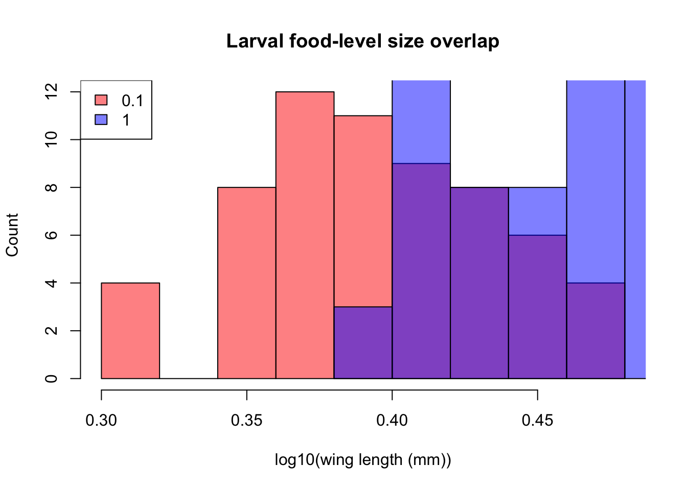
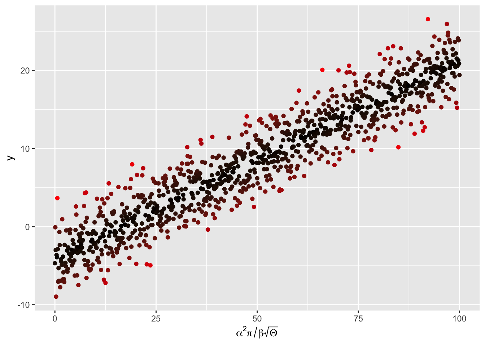
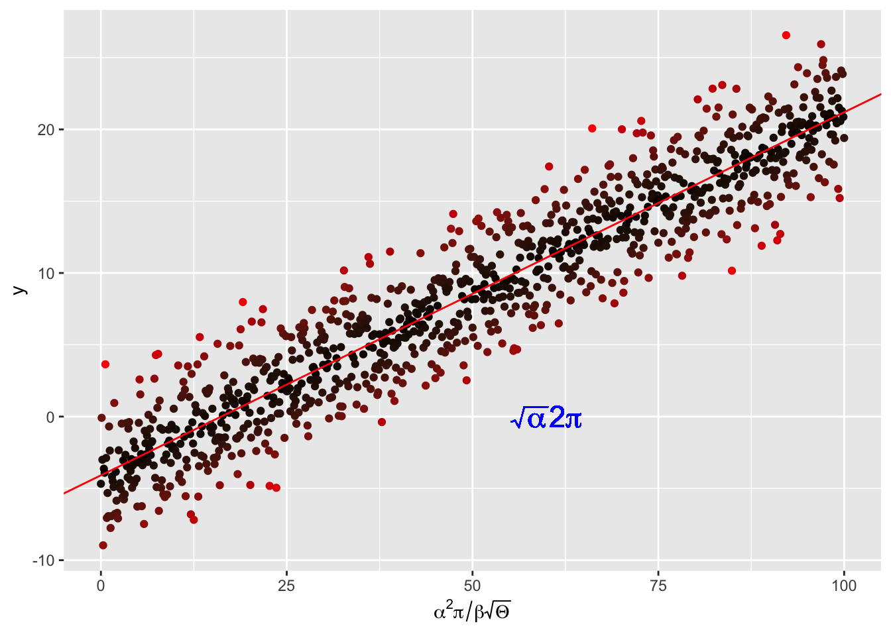
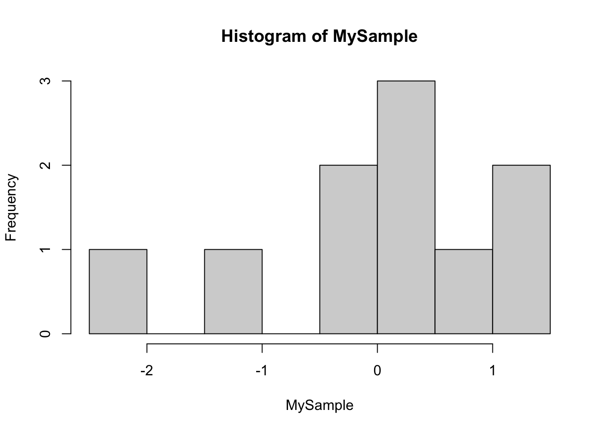
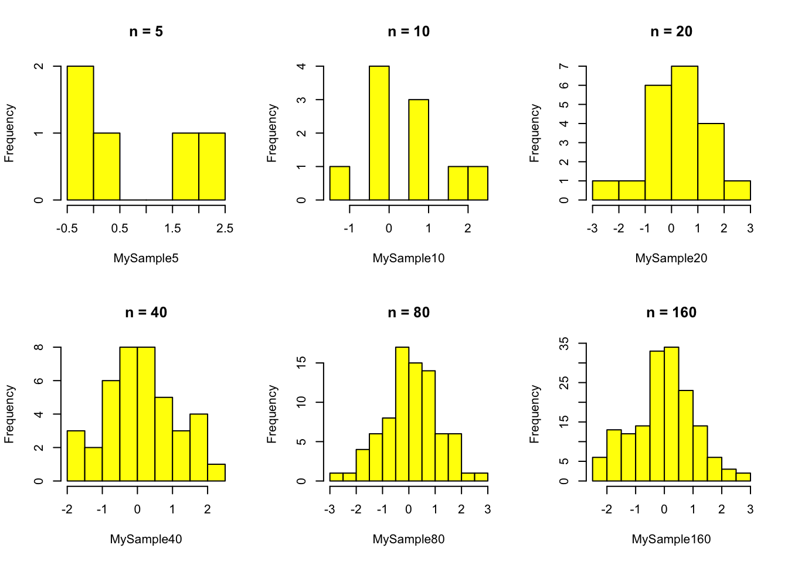
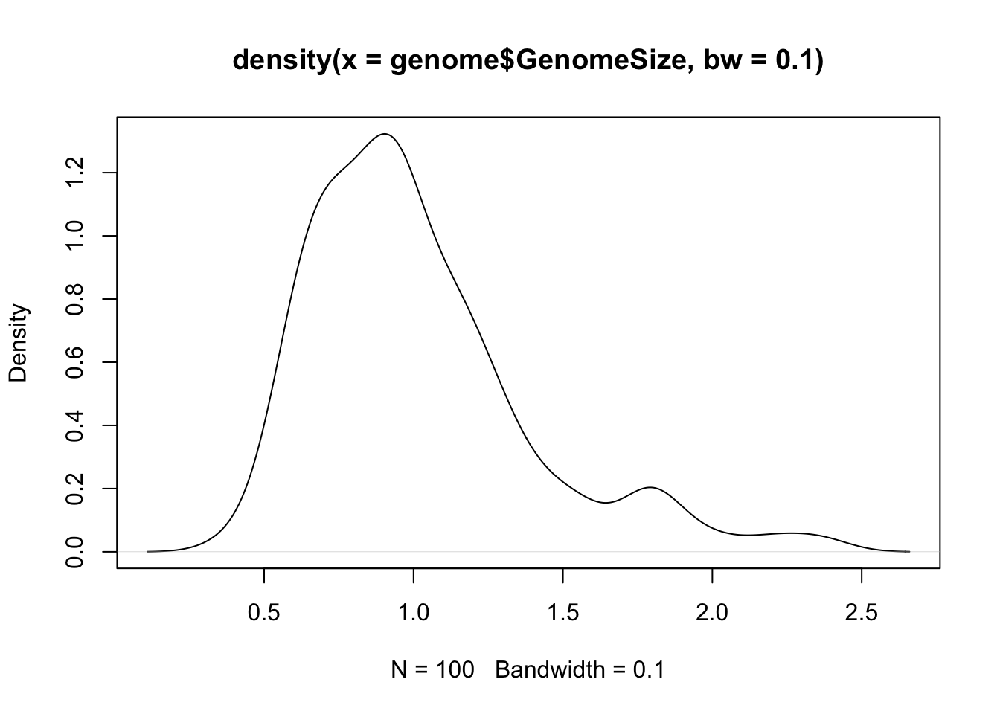
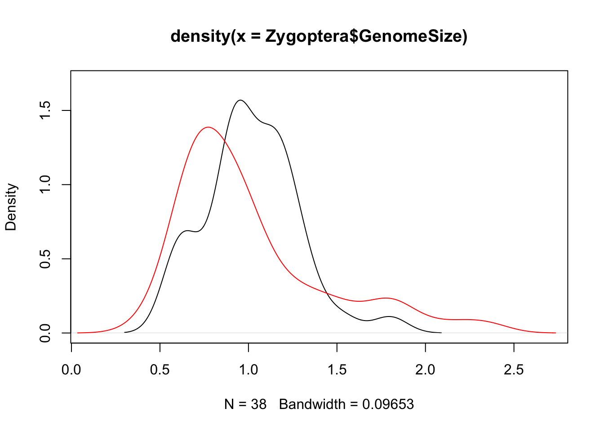

MyData <- as.matrix(read.csv("activities/data/PoundHillData.csv",header = FALSE))
class(MyData)[1] "matrix" "array" This section will cover: * Data Management and Visualization * Experimental Design
Clutter and confusion are failures of design, not attributes of information. – Edward Tuftey
This section aims at introducing you to key principles and methods for data processing, storage, exploration and visualization.
In this modern world, massive amounts of data are being generated in biology due to rapid advances in technologies for collecting new, as well as for digitizing old data. Some prominent examples are Genomic, Ecosystem respiration, Climatic, and Animal tracking data. Ultimately, the goal of quantitative biology is to both, discover patterns in these data, and fit mathematical models to them. Reproducible data manipulation, analyses and visualization are particularly necessary when data are so large and complex, and few are more so than biological data, which are extremely heterogeneous in their structure and quality. Furthermore, when these data are “big” (more below on what makes a dataset “big”), computationally-efficient data handling, manipulation and analysis techniques are needed.
We will use R in VectorBiTE 2023 Training because it a great one stop solution for both data manipulation, analysis and visualization. In general, R will do the job for most of your purposes. There is not much between difference these two languages for data science. One advantage that Python has is its greater computational efficiency. On the other hand, R was developed for convenient statistical analyses, with efficiency not being the main concern.
You are likely to spend far more time than you think dredging through data files manually – checking them, editing them, and reformatting them to make them useful for data exploration and analysis. It is often the case that you’ll have to deal with messy or incomplete data, either because of sampling challenges (e.g., “field” data), or because you got given data that was poorly recorded and maintained. The data we obtain from different data sources is often unusable at the beginning; for example you may need to: * Identify the variables vs observations within the data—somebody else might have recorded the data, or you youself might have collected the data some time back! * Fill in zeros (true measured or observed absences) * Identify and add a value (e.g., -999999) to denote missing observations * Derive or calculate new variables from the raw observations (e.g., convert measurements to SI units; kilograms, meters, seconds, etc.) * Reshape/reformat your data into a layout that works best for analysis (e.g., for R itself);e.g., from wide to long data format for replicated (across plates, chambers, plots, sites, etc.) data * Merge multiple datasets together into a single data sheet
This is not an exhaustive list. Doing so many different things to your raw data is both time-consuming and risky. Why risky? Because to err is very human, and every new, tired mouse-click and/or keyboard-stab has a high probability of inducing an erroneous data point!
So you would like a record of the data wrangling process (so that it is repeatable and even reversible), and automate it to the extent possible. To this end, here are some guidelines:
Store data in universally (machine)-readable, non-proprietary formats; basically, use plain ASCII text for your file names, variable/field/column names, and data values. And make sure the data file’s “text encoding” is correct and standard (e.g., UTF-8).
Keep a metadata file for each unique dataset (again, in non-proprietary format).
Minimize modifying raw data by hand—use scripts instead—keep a copy of the data as they were recorded.
Use meaningful names for your data and files and field (column) names
When you add data, try not to add columns (widening the format); rather, design your tables/data-sheets so that you add only rows (lengthening the format)—and convert “wide format data” to “long format data” using scripts, not by hand,
All cells within a data column should contain only one type of information (i.e., either text (character), numeric, etc.).
Ultimately, consider creating a relational database for your data (More on this below).
This is not an exhaustive list either— see the Readings & Resources Section.
We will use the Pound Hill dataset collected by students in an Imperial College Field Course for understanding some of these principles. This is not vectorbite data but it is an excellent example of a dataset that needs wrangling. VectorBiTE is too well structured for this sort of wrangling.
To start with, we need to import the raw data file, for which, follow these steps:
★ Copy the file PoundHillData.csv and PoundHillMetaData.csv files from the VectorBiTE data directory into your own R data directory. Then load the data in R:
MyData <- as.matrix(read.csv("activities/data/PoundHillData.csv",header = FALSE))
class(MyData)[1] "matrix" "array" as.matrix(), and setting header=FALSE guarantees that the data are imported “as is” so that you can wrangle them. Otherwise read.csv will convert the first row to column headers.MyData because at least one of the entries is already character class.As of R version 4.0.0 of R released in April 2020, the default for stringsAsFactors was changed to false If you are using R version 3.x.x, you will need to add stringsAsFactors = FALSE to the above command to prevent R from converting all columns of character type (strings) to the factor data type (this will create problems with subsequent data wrangling).
★ Now load the Metadata:
MyMetaData <- read.csv("activities/data/PoundHillMetaData.csv", header = TRUE, sep=";")
class(MyMetaData)[1] "data.frame"header =TRUE because we do have metadata headers (FieldName andDescription), and;) as delimiter because there are commas in one of the field descriptions.If you have a string (character data type) stored as a variable in your R workspace, or a file containing strings, the computer has to know what character encoding it is in or it cannot interpret or display it to you correctly. Usually, the encoding will be UTF-8 or ASCII, which is easily handled by most computer languages. Sometimes you may run into (unexpected) bugs when importing and running scripts in R because your file has a non-standard text encoding. You will need to specify the encoding in that case, using the encoding argument of read.csv() and read.table(). You can check the encoding of a file by using find in Linux/Mac. Try in your UNIX terminal:
file -i data/PoundHillData.csv
or, check encoding of all files in the Data directory:
file -i data/*.csv
Use file -I instead of file -i in a Mac terminal.
Now check out what the data look like:
head(MyData) V1 V2 V3 V4 V5 V6
[1,] "Cultivation" "october" "october" "october" "october" "october"
[2,] "Block" "a" "a" "a" "a" "a"
[3,] "Plot" "1" "1" "1" "1" "1"
[4,] "Quadrat" "Q1" "Q2" "Q3" "Q4" "Q5"
[5,] "Achillea millefolium" "4" "8" "3" "20" "6"
[6,] "Agrostis gigantea" "" "" "" "" "15"
V7 V8 V9 V10 V11 V12 V13 V14 V15 V16
[1,] "may" "may" "may" "may" "may" "march" "march" "march" "march" "march"
[2,] "a" "a" "a" "a" "a" "a" "a" "a" "a" "a"
[3,] "2" "2" "2" "2" "2" "3" "3" "3" "3" "3"
[4,] "Q1" "Q2" "Q3" "Q4" "Q5" "Q1" "Q2" "Q3" "Q4" "Q5"
[5,] "4" "" "" "" "" "1" "2" "5" "12" "2"
[6,] "" "" "" "" "2" "8" "" "53" "16" "47"
V17 V18 V19 V20 V21 V22 V23 V24 V25 V26
[1,] "march" "may" "may" "may" "may" "may" "march" "march" "march" "march"
[2,] "a" "b" "b" "b" "b" "b" "b" "b" "b" "b"
[3,] "3" "4" "4" "4" "4" "4" "5" "5" "5" "5"
[4,] "Q6" "Q1" "Q2" "Q3" "Q4" "Q5" "Q1" "Q2" "Q3" "Q4"
[5,] "" "" "" "" "" "" "3" "8" "3" "7"
[6,] "12" "68" "57" "83" "88" "89" "10" "29" "24" "24"
V27 V28 V29 V30 V31 V32 V33 V34
[1,] "march" "october" "october" "october" "october" "march" "march" "march"
[2,] "b" "b" "b" "b" "b" "c" "c" "c"
[3,] "5" "6" "6" "6" "6" "7" "7" "7"
[4,] "Q5" "Q1" "Q2" "Q3" "Q4" "Q1" "Q2" "Q3"
[5,] "20" "1" "" "3" "1" "24" "26" "37"
[6,] "43" "143" "39" "10" "67" "62" "22" "37"
V35 V36 V37 V38 V39 V40 V41 V42
[1,] "march" "march" "october" "october" "october" "october" "october" "may"
[2,] "c" "c" "c" "c" "c" "c" "c" "c"
[3,] "7" "7" "8" "8" "8" "8" "8" "9"
[4,] "Q4" "Q5" "Q1" "Q2" "Q3" "Q4" "Q5" "Q1"
[5,] "37" "100" "2" "" "" "1" "" ""
[6,] "4" "27" "198" "96" "99" "48" "351" "57"
V43 V44 V45 V46 V47 V48 V49 V50 V51 V52
[1,] "may" "may" "may" "may" "march" "march" "march" "march" "march" "march"
[2,] "c" "c" "c" "c" "d" "d" "d" "d" "d" "d"
[3,] "9" "9" "9" "9" "10" "10" "10" "10" "10" "10"
[4,] "Q2" "Q3" "Q4" "Q5" "Q1" "Q2" "Q3" "Q4" "Q5" "Q6"
[5,] "" "7" "" "5" "7" "2" "2" "9" "4" "10"
[6,] "41" "65" "38" "45" "259" "33" "96" "291" "19" "80"
V53 V54 V55 V56 V57 V58 V59 V60
[1,] "may" "may" "may" "october" "october" "october" "october" "october"
[2,] "d" "d" "d" "d" "d" "d" "d" "d"
[3,] "12" "12" "12" "11" "11" "11" "11" "11"
[4,] "Q1" "Q2" "Q4" "Q1" "Q2" "Q3" "Q4" "Q5"
[5,] "" "" "" "" "" "12" "6" "5"
[6,] "33" "145" "45" "62" "25" "57" "113" "12" Note that column names V1-V60 were generated automatically by R when you imported the data
In RStudio you can also do view(MyData) at the R prompt or any other code editor, fix(MyData). We won’t do anything with the metadata file in this session except inspect the information it contains.
Data wrangling really begins immediately after data collection. You may collect data of different kinds (e.g., diversity, biomass, tree girth), etc. Keep the original spreadsheet well documented using a “metadata” file that describes the data (you would hopefully have written the first version of this even before you started collecting the data!). The minimum information needed to make a metadata file useful is a description of each of the fields — the column or row headers under which the information is stored in your data/spreadsheet.
Have a look at the metadata file for the Pound Hill dataset:
Boolean arguments in R: In R, you can use F and T for boolean FALSE and TRUE respectively. To see this, type a <- T
in the R commandline, and then see what R returns when you type a. Using F and T for boolean FALSE and TRUE respectively is not necessarily good practice, but be aware that this option exists.
MyMetaData FieldName
1 Cultivation
2 Block
3 Plot
4 Quadrat
5 SpeciesCount
Description
1 Cultivation treatments applied in three months: october, may, march
2 Treatment blocks ids: a-d
3 Plot ids under each treatment : 1-12
4 Sampling quadrats (25x50 cm each) per plot: Q1--Q6
5 Number of individuals of species (count) per quadratIdeally, you would also like to add more information about the data, such as the measurement units of each type of observation. These data include just one type of observation: Number of individuals of species per sample (plot), which is a count (integer, or int data class).
When the dataset is large (e.g., 1000’s of rows), cleaning and exploring it can get tricky, and you are very likely to make many mistakes. You should record all the steps you used to process it with an R script rather than risking a manual and basically irreproducible processing. Most importantly, avoid or minimize editing your raw data file—make a copy (with a meaningful tag in the file name to indicate the date and author) before making hand edits.
All blank cells in the data are true absences, in the sense that species was actually not present in that quadrat. So we can replace those blanks with zeros:
MyData[MyData == ""] = 0One typically records data in the field or experiments using a “wide” format, where a subject’s (e.g., habitat, plot, treatment, species etc) repeated responses or observations (e.g., species count, biomass, etc) will be in a single row, and each response in a separate column. The raw Pound Hill data were recorded in this way. However, the wide format is not ideal for data analysis — instead you need the data in a “long” format, where each row is one observation point per subject. So each subject will have data in multiple rows. Any measures/variables/observations that don’t change across the subjects will have the same value in all the rows. For humans, the wide format is generally more intuitive for recording (e.g., in field data sheets) data. However, for data inspection and analysis, the long format is preferable for two main reasons:
If you have many response and/or treatment variables, it is hard to inspect the data values in a wide-form version of the dataset. In the case of the pound hill dataset, the response variable is species, and treatment variable is cultivation month (with sequentially nested replicates—block, plot, quadrat— within it), and the data values are the number (count) of individuals of each species per quadrat. As you can see, there are a a large number of columns (60 to be exact), with columns V2-V60 containing different treatment combinations. This makes it hard to visually see problems with the data values. You would have to look across all these columns to see any issues, or if you wanted to run a single command on all the data values (e.g., is.integer() to check if they are all integers, as you would expect), it would be harder to do so or interpret the output if all the species counts were in a single column.
Long-form datasets are typically required for statistical analysis and visualization packages or commands in R (or Python, for that matter). For example, if you wanted to fit a linear model using R’s lm() command, with treatment (cultivation month) as the independent variable, you would need to structure your data in long form. Similarly, and if you wanted to plot histograms of species numbers by treatment using ggplot (coming up), you would also need these data in long format.
OK, so let’s go from wide to long format already!
You can switch between wide and long formats using melt() and dcast() from the reshape2 package, as illustrated in the script DataWrang.R available at TheMulQuaBio repository. But first, let’s transpose the data, because for a long format, the (nested) treatments variables should be in rows:
MyData <- t(MyData)
head(MyData) [,1] [,2] [,3] [,4] [,5]
V1 "Cultivation" "Block" "Plot" "Quadrat" "Achillea millefolium"
V2 "october" "a" "1" "Q1" "4"
V3 "october" "a" "1" "Q2" "8"
V4 "october" "a" "1" "Q3" "3"
V5 "october" "a" "1" "Q4" "20"
V6 "october" "a" "1" "Q5" "6"
[,6] [,7] [,8]
V1 "Agrostis gigantea" "Anagallis arvensis" "Anchusa arvensis"
V2 "0" "0" "0"
V3 "0" "0" "3"
V4 "0" "0" "1"
V5 "0" "0" "1"
V6 "15" "0" "0"
[,9] [,10] [,11]
V1 "Anisantha sterilis" "Aphanes australis" "Artemesia vulgaris"
V2 "0" "0" "0"
V3 "0" "0" "0"
V4 "0" "0" "2"
V5 "0" "0" "0"
V6 "5" "0" "0"
[,12] [,13] [,14]
V1 "Bromus hordaceus" "Cerastium glomeratun" "Chenopodium album"
V2 "0" "0" "0"
V3 "0" "2" "0"
V4 "0" "1" "0"
V5 "0" "0" "0"
V6 "0" "0" "0"
[,15] [,16] [,17] [,18]
V1 "Cirsium arvense" "Conyza canadensis" "Crepis capillaris" "Crepis paludos"
V2 "0" "0" "0" "0"
V3 "5" "0" "0" "0"
V4 "0" "0" "0" "0"
V5 "0" "0" "0" "0"
V6 "0" "0" "0" "0"
[,19] [,20] [,21]
V1 "Elytrigia repens" "Epilobium ciliatum" "Erodium cicutarium"
V2 "0" "1" "0"
V3 "0" "0" "0"
V4 "0" "0" "0"
V5 "0" "0" "0"
V6 "0" "0" "0"
[,22] [,23] [,24] [,25]
V1 "Fallopia convolvulus" "Festuca rubra" "Geranium molle" "Holcus mollis"
V2 "0" "0" "0" "159"
V3 "0" "0" "0" "81"
V4 "0" "0" "0" "144"
V5 "0" "0" "0" "124"
V6 "0" "0" "0" "115"
[,26] [,27] [,28]
V1 "Hypochaeris radicata" "Lactuca serriola" "Medicago lupulina "
V2 "0" "0" "0"
V3 "0" "0" "0"
V4 "0" "0" "0"
V5 "0" "0" "0"
V6 "0" "0" "0"
[,29] [,30] [,31]
V1 "Myosotis arvensis" "Plantago lanceolata " "Polpaver dubium"
V2 "0" "0" "0"
V3 "0" "0" "0"
V4 "0" "0" "0"
V5 "0" "0" "0"
V6 "0" "0" "0"
[,32] [,33] [,34]
V1 "Raphanus raphanistrum " "Rumex acetosella" "Rumex crispus"
V2 "0" "25" "0"
V3 "0" "0" "0"
V4 "0" "0" "0"
V5 "0" "6" "0"
V6 "0" "1" "0"
[,35] [,36] [,37] [,38]
V1 "Rumex obtusifolia" "Semecio jacobaea" "Sonchus asper" "Spergula arvensis"
V2 "0" "0" "0" "0"
V3 "0" "0" "0" "0"
V4 "0" "0" "0" "0"
V5 "0" "0" "0" "0"
V6 "0" "0" "0" "0"
[,39] [,40] [,41]
V1 "Stellaria graminea" "Taraxacum officinale" "Tripleurospermum inodorum "
V2 "8" "0" "11"
V3 "4" "0" "1"
V4 "1" "0" "0"
V5 "0" "0" "0"
V6 "1" "10" "0"
[,42] [,43] [,44] [,45]
V1 "Veronica arvensis" "Veronica persica" "Viola arvensis" "Vulpia myuros "
V2 "0" "1" "0" "0"
V3 "0" "0" "3" "0"
V4 "0" "0" "1" "0"
V5 "0" "0" "1" "0"
V6 "0" "0" "0" "7" At this point, you should note that the first row in the data matrix actually contains the column headers, but these are not encoded by R as being column headers. As far as R is concerned, the first row is just another data row. You can check this:
colnames(MyData)NULLWe need to fix this. Also, we would like to create a dataframe now, as this is needed by the R commands we will be using, and ultimately, any visualization and analysis we will be doing. To this end, let’s first create a temporary dataframe with just the data, without the column names:
TempData <- as.data.frame(MyData[-1,],stringsAsFactors = F)
head(TempData) V1 V2 V3 V4 V5 V6 V7 V8 V9 V10 V11 V12 V13 V14 V15 V16 V17 V18 V19 V20
V2 october a 1 Q1 4 0 0 0 0 0 0 0 0 0 0 0 0 0 0 1
V3 october a 1 Q2 8 0 0 3 0 0 0 0 2 0 5 0 0 0 0 0
V4 october a 1 Q3 3 0 0 1 0 0 2 0 1 0 0 0 0 0 0 0
V5 october a 1 Q4 20 0 0 1 0 0 0 0 0 0 0 0 0 0 0 0
V6 october a 1 Q5 6 15 0 0 5 0 0 0 0 0 0 0 0 0 0 0
V7 may a 2 Q1 4 0 0 1 0 0 0 0 0 7 1 0 0 0 0 0
V21 V22 V23 V24 V25 V26 V27 V28 V29 V30 V31 V32 V33 V34 V35 V36 V37 V38 V39
V2 0 0 0 0 159 0 0 0 0 0 0 0 25 0 0 0 0 0 8
V3 0 0 0 0 81 0 0 0 0 0 0 0 0 0 0 0 0 0 4
V4 0 0 0 0 144 0 0 0 0 0 0 0 0 0 0 0 0 0 1
V5 0 0 0 0 124 0 0 0 0 0 0 0 6 0 0 0 0 0 0
V6 0 0 0 0 115 0 0 0 0 0 0 0 1 0 0 0 0 0 1
V7 16 12 0 0 120 0 0 0 0 0 0 0 1 0 0 0 0 2 0
V40 V41 V42 V43 V44 V45
V2 0 11 0 1 0 0
V3 0 1 0 0 3 0
V4 0 0 0 0 1 0
V5 0 0 0 0 1 0
V6 10 0 0 0 0 7
V7 0 0 0 2 0 0Note that stringsAsFactors = F is important here because we don’t want R to convert columns to the factor class without supervision. This might be a good idea in may cases, but let’s just do it manually later. This will also force you to think carefully about what data each of you columns contains.
Now let’s assign the original column names to the temporary dataset:
colnames(TempData) <- MyData[1,] # assign column names from original data
head(TempData) Cultivation Block Plot Quadrat Achillea millefolium Agrostis gigantea
V2 october a 1 Q1 4 0
V3 october a 1 Q2 8 0
V4 october a 1 Q3 3 0
V5 october a 1 Q4 20 0
V6 october a 1 Q5 6 15
V7 may a 2 Q1 4 0
Anagallis arvensis Anchusa arvensis Anisantha sterilis Aphanes australis
V2 0 0 0 0
V3 0 3 0 0
V4 0 1 0 0
V5 0 1 0 0
V6 0 0 5 0
V7 0 1 0 0
Artemesia vulgaris Bromus hordaceus Cerastium glomeratun Chenopodium album
V2 0 0 0 0
V3 0 0 2 0
V4 2 0 1 0
V5 0 0 0 0
V6 0 0 0 0
V7 0 0 0 7
Cirsium arvense Conyza canadensis Crepis capillaris Crepis paludos
V2 0 0 0 0
V3 5 0 0 0
V4 0 0 0 0
V5 0 0 0 0
V6 0 0 0 0
V7 1 0 0 0
Elytrigia repens Epilobium ciliatum Erodium cicutarium Fallopia convolvulus
V2 0 1 0 0
V3 0 0 0 0
V4 0 0 0 0
V5 0 0 0 0
V6 0 0 0 0
V7 0 0 16 12
Festuca rubra Geranium molle Holcus mollis Hypochaeris radicata
V2 0 0 159 0
V3 0 0 81 0
V4 0 0 144 0
V5 0 0 124 0
V6 0 0 115 0
V7 0 0 120 0
Lactuca serriola Medicago lupulina Myosotis arvensis Plantago lanceolata
V2 0 0 0 0
V3 0 0 0 0
V4 0 0 0 0
V5 0 0 0 0
V6 0 0 0 0
V7 0 0 0 0
Polpaver dubium Raphanus raphanistrum Rumex acetosella Rumex crispus
V2 0 0 25 0
V3 0 0 0 0
V4 0 0 0 0
V5 0 0 6 0
V6 0 0 1 0
V7 0 0 1 0
Rumex obtusifolia Semecio jacobaea Sonchus asper Spergula arvensis
V2 0 0 0 0
V3 0 0 0 0
V4 0 0 0 0
V5 0 0 0 0
V6 0 0 0 0
V7 0 0 0 2
Stellaria graminea Taraxacum officinale Tripleurospermum inodorum
V2 8 0 11
V3 4 0 1
V4 1 0 0
V5 0 0 0
V6 1 10 0
V7 0 0 0
Veronica arvensis Veronica persica Viola arvensis Vulpia myuros
V2 0 1 0 0
V3 0 0 3 0
V4 0 0 1 0
V5 0 0 1 0
V6 0 0 0 7
V7 0 2 0 0The row names still remain, but they are not really bothering us, so we can ignore them. But if you do want to get rid of them, you can:
rownames(TempData) <- NULL
head(TempData) Cultivation Block Plot Quadrat Achillea millefolium Agrostis gigantea
1 october a 1 Q1 4 0
2 october a 1 Q2 8 0
3 october a 1 Q3 3 0
4 october a 1 Q4 20 0
5 october a 1 Q5 6 15
6 may a 2 Q1 4 0
Anagallis arvensis Anchusa arvensis Anisantha sterilis Aphanes australis
1 0 0 0 0
2 0 3 0 0
3 0 1 0 0
4 0 1 0 0
5 0 0 5 0
6 0 1 0 0
Artemesia vulgaris Bromus hordaceus Cerastium glomeratun Chenopodium album
1 0 0 0 0
2 0 0 2 0
3 2 0 1 0
4 0 0 0 0
5 0 0 0 0
6 0 0 0 7
Cirsium arvense Conyza canadensis Crepis capillaris Crepis paludos
1 0 0 0 0
2 5 0 0 0
3 0 0 0 0
4 0 0 0 0
5 0 0 0 0
6 1 0 0 0
Elytrigia repens Epilobium ciliatum Erodium cicutarium Fallopia convolvulus
1 0 1 0 0
2 0 0 0 0
3 0 0 0 0
4 0 0 0 0
5 0 0 0 0
6 0 0 16 12
Festuca rubra Geranium molle Holcus mollis Hypochaeris radicata
1 0 0 159 0
2 0 0 81 0
3 0 0 144 0
4 0 0 124 0
5 0 0 115 0
6 0 0 120 0
Lactuca serriola Medicago lupulina Myosotis arvensis Plantago lanceolata
1 0 0 0 0
2 0 0 0 0
3 0 0 0 0
4 0 0 0 0
5 0 0 0 0
6 0 0 0 0
Polpaver dubium Raphanus raphanistrum Rumex acetosella Rumex crispus
1 0 0 25 0
2 0 0 0 0
3 0 0 0 0
4 0 0 6 0
5 0 0 1 0
6 0 0 1 0
Rumex obtusifolia Semecio jacobaea Sonchus asper Spergula arvensis
1 0 0 0 0
2 0 0 0 0
3 0 0 0 0
4 0 0 0 0
5 0 0 0 0
6 0 0 0 2
Stellaria graminea Taraxacum officinale Tripleurospermum inodorum
1 8 0 11
2 4 0 1
3 1 0 0
4 0 0 0
5 1 10 0
6 0 0 0
Veronica arvensis Veronica persica Viola arvensis Vulpia myuros
1 0 1 0 0
2 0 0 3 0
3 0 0 1 0
4 0 0 1 0
5 0 0 0 7
6 0 2 0 0Finally, let’s convert the data to long format. For this, we need the reshape2 package:
Both library() and require() are commands/functions to load packages. The difference is that require() is designed for use inside other functions, so it returns FALSE and gives a warning, whereaslibrary() returns an error by default if the package does not exist.
require(reshape2)# load the reshape2 packageLoading required package: reshape2Check out the help for the melt command of reshape2: ?melt.
OK finally, let’s wrangle this dataset into submission!
MyWrangledData <- melt(TempData, id=c("Cultivation", "Block", "Plot", "Quadrat"), variable.name = "Species", value.name = "Count")
head(MyWrangledData); tail(MyWrangledData) Cultivation Block Plot Quadrat Species Count
1 october a 1 Q1 Achillea millefolium 4
2 october a 1 Q2 Achillea millefolium 8
3 october a 1 Q3 Achillea millefolium 3
4 october a 1 Q4 Achillea millefolium 20
5 october a 1 Q5 Achillea millefolium 6
6 may a 2 Q1 Achillea millefolium 4 Cultivation Block Plot Quadrat Species Count
2414 may d 12 Q4 Vulpia myuros 0
2415 october d 11 Q1 Vulpia myuros 0
2416 october d 11 Q2 Vulpia myuros 0
2417 october d 11 Q3 Vulpia myuros 0
2418 october d 11 Q4 Vulpia myuros 0
2419 october d 11 Q5 Vulpia myuros 0This is the long format we have been extolling! It looks much simpler, with all the count data in a single, long column with each count value associated with some “attributes”. It is now clear that the fundamental unit of analysis is a species’ count in a quadrat, each nested within a plot, each in turn nested within a block, and finally, each of which is nested within a cultivation month (the main treatment).
We can also now assign the correct data types to each column:
MyWrangledData[, "Cultivation"] <- as.factor(MyWrangledData[, "Cultivation"])
MyWrangledData[, "Block"] <- as.factor(MyWrangledData[, "Block"])
MyWrangledData[, "Plot"] <- as.factor(MyWrangledData[, "Plot"])
MyWrangledData[, "Quadrat"] <- as.factor(MyWrangledData[, "Quadrat"])
MyWrangledData[, "Count"] <- as.integer(MyWrangledData[, "Count"])
str(MyWrangledData)'data.frame': 2419 obs. of 6 variables:
$ Cultivation: Factor w/ 3 levels "march","may",..: 3 3 3 3 3 2 2 2 2 2 ...
$ Block : Factor w/ 4 levels "a","b","c","d": 1 1 1 1 1 1 1 1 1 1 ...
$ Plot : Factor w/ 12 levels "1","10","11",..: 1 1 1 1 1 5 5 5 5 5 ...
$ Quadrat : Factor w/ 6 levels "Q1","Q2","Q3",..: 1 2 3 4 5 1 2 3 4 5 ...
$ Species : Factor w/ 41 levels "Achillea millefolium",..: 1 1 1 1 1 1 1 1 1 1 ...
$ Count : int 4 8 3 20 6 4 0 0 0 0 ...Once you have wrangled the Pound Hill data to its long format, you are ready to go! You may want to start by examining and visualizing the basic properties of the data, such as the number of tree species (41) in the dataset, number of quadrats (replicates) per plot and cultivation treatment, etc.
We will learn about visualization next. After that, you can return to this dataset and try out some visual data exploration. For example, a useful visualization would be to make a histogram of abundances of species, grouped by different factors. For example, you can look at distributions of species’ abundances grouped by the fundamental treatment, Cultivation.
tidyverseSo if you think this is the end of the options you have for data wrangling in R, think again. There is a whole data science “ecosystem” you can use in R through the tidyverse package. This meta-package includes dplyr, the next iteration of plyr that addresses the speed issues in the latter, and tidyr, essentially a nicer wrapper to the reshape2 package with additional functions, and ggplot2 (coming up later).
Please install and load the tidyverse package.
require(tidyverse)Loading required package: tidyverse── Attaching packages ─────────────────────────────────────── tidyverse 1.3.1 ──✔ ggplot2 3.3.6 ✔ purrr 0.3.4
✔ tibble 3.1.7 ✔ dplyr 1.0.9
✔ tidyr 1.2.0 ✔ stringr 1.4.0
✔ readr 2.1.2 ✔ forcats 0.5.1── Conflicts ────────────────────────────────────────── tidyverse_conflicts() ──
✖ dplyr::filter() masks stats::filter()
✖ dplyr::lag() masks stats::lag()This loads a number of packages at one go (and you might get some name-conflict-masking messages; see the note below). You can list these packages:
tidyverse_packages(include_self = TRUE) # the include_self = TRUE means list "tidyverse" as well [1] "broom" "cli" "crayon" "dbplyr"
[5] "dplyr" "dtplyr" "forcats" "googledrive"
[9] "googlesheets4" "ggplot2" "haven" "hms"
[13] "httr" "jsonlite" "lubridate" "magrittr"
[17] "modelr" "pillar" "purrr" "readr"
[21] "readxl" "reprex" "rlang" "rstudioapi"
[25] "rvest" "stringr" "tibble" "tidyr"
[29] "xml2" "tidyverse" That’s a lot of packages!
The first time you load tidyverse, you will get some feedback from R, including something like the following:
── Conflicts ────────────────────────────────────────── tidyverse_conflicts() ──
✖ dplyr::filter() masks stats::filter()
✖ dplyr::lag() masks stats::lag()Depending on which package you are loading, you might get such a warning message, that “so and so” function is being “masked” from another one. Basically, any additional packages you load may have one or more functions with the same names(s) as existing function(s) (which will typically do something completely different) in base R’s packages. This creates name conflicts. Therefore, R will prevent you from using the new function(s) that you have enabled by using the same name of an pre-existing function. It gives priority to the pre-existing one. So, for example, if you call just filter(), the command that will be used is the one from stats, and not the one from dplyr. In this scenario, you can use the new function by using the double colon notation :: like so: dplyr::filter().
The :: notation is like the dot notation in Python — it allows you to access a particular function (like a Python module) from a package. So you can also use the command at the end of the :: (try just as_tibble(MyWrangledData), for example), but it’s just safer to use the :: because then you can rest assured that you are actually using the function you intended to.
More of :: usage coming up below!
OK, let’s try data exploration in tidyverse.
First, let’s convert the dataframe to a “tibble”:
tibble::as_tibble(MyWrangledData) # A tibble: 2,419 × 6
Cultivation Block Plot Quadrat Species Count
<fct> <fct> <fct> <fct> <fct> <int>
1 october a 1 Q1 Achillea millefolium 4
2 october a 1 Q2 Achillea millefolium 8
3 october a 1 Q3 Achillea millefolium 3
4 october a 1 Q4 Achillea millefolium 20
5 october a 1 Q5 Achillea millefolium 6
6 may a 2 Q1 Achillea millefolium 4
7 may a 2 Q2 Achillea millefolium 0
8 may a 2 Q3 Achillea millefolium 0
9 may a 2 Q4 Achillea millefolium 0
10 may a 2 Q5 Achillea millefolium 0
# … with 2,409 more rowsOK, there’s the funky double colon (::) notation again…
Also, note that we didn’t have to reassign MyWrangledData back to its original name because tibble just does the needful to the data frame in its current place.
A “tibble” in tidyverse is equivalent to R’s traditional data.frame. Tibbles are modified data frames, but they make data exploration even easier.
dplyr::glimpse(MyWrangledData) #like str(), but nicer!Rows: 2,419
Columns: 6
$ Cultivation <fct> october, october, october, october, october, may, may, may…
$ Block <fct> a, a, a, a, a, a, a, a, a, a, a, a, a, a, a, a, b, b, b, b…
$ Plot <fct> 1, 1, 1, 1, 1, 2, 2, 2, 2, 2, 3, 3, 3, 3, 3, 3, 4, 4, 4, 4…
$ Quadrat <fct> Q1, Q2, Q3, Q4, Q5, Q1, Q2, Q3, Q4, Q5, Q1, Q2, Q3, Q4, Q5…
$ Species <fct> Achillea millefolium, Achillea millefolium, Achillea mille…
$ Count <int> 4, 8, 3, 20, 6, 4, 0, 0, 0, 0, 1, 2, 5, 12, 2, 0, 0, 0, 0,…Or this:
utils::View(MyWrangledData) #same as fix()
dplyr::filter(MyWrangledData, Count>100) #like subset(), but nicer! Cultivation Block Plot Quadrat Species Count
1 october b 6 Q1 Agrostis gigantea 143
2 october c 8 Q1 Agrostis gigantea 198
3 october c 8 Q5 Agrostis gigantea 351
4 march d 10 Q1 Agrostis gigantea 259
5 march d 10 Q4 Agrostis gigantea 291
6 may d 12 Q2 Agrostis gigantea 145
7 october d 11 Q4 Agrostis gigantea 113
8 may c 9 Q2 Anisantha sterilis 120
9 october a 1 Q1 Holcus mollis 159
10 october a 1 Q3 Holcus mollis 144
11 october a 1 Q4 Holcus mollis 124
12 october a 1 Q5 Holcus mollis 115
13 may a 2 Q1 Holcus mollis 120
14 october b 6 Q2 Holcus mollis 129
15 october b 6 Q3 Holcus mollis 123
16 october c 8 Q2 Holcus mollis 256
17 october c 8 Q3 Holcus mollis 147
18 october c 8 Q4 Holcus mollis 128
19 october d 11 Q1 Holcus mollis 104
20 october d 11 Q2 Holcus mollis 131
21 march d 10 Q3 Medicago lupulina 114dplyr::slice(MyWrangledData, 10:15) # Look at an arbitrary set of data rows Cultivation Block Plot Quadrat Species Count
1 may a 2 Q5 Achillea millefolium 0
2 march a 3 Q1 Achillea millefolium 1
3 march a 3 Q2 Achillea millefolium 2
4 march a 3 Q3 Achillea millefolium 5
5 march a 3 Q4 Achillea millefolium 12
6 march a 3 Q5 Achillea millefolium 2Learning to use tidyverse involves learning some new syntax and a lot of new commands, but if you plan to do a lot of data wrangling and exploration, you will benefit from getting to know them well.
Have a look at some tidyverse-related cheatsheets to explore further.
One additional thing that you would need to get used to in the tidyverse is piping multiple commands using the %% notation, which makes your code ore compact, and in theory, more readable.
The buzzword ‘Big Data’ basically refers to datasets that have the following properties:
A dataset that does not fit into available RAM on one system (say, 2 gigabytes).
A dataset that has so many rows (when in it’s long format — see above sections) that it significantly slows down your analysis or simulation without vectorization (that is, when looping).
Both these criteria are programming language-, and computer hardware-dependent, of course. For example, a 32-bit OS can only handle ~2 GB of RAM, so this computer will struggle every time you try to handle a dataset in that size range.
R reads data into RAM all at once when you using the read.table (or its wrapper, read.csv() — maybe you have realized by now that read.csv() is basically calling read.table() with a particular set of options. That is, objects in R live in memory entirely, and big-ish data in RAM will cause R to choke.
There are a few options (which you can combine, of course) if you are actually using datasets that are so large:
Import large files smartly; e.g., using scan() in R, and then create subsets of the data that you need. Also, use the reshape or tidyr packages to covert your data in the most “square” (so neither too long or too wide) format as possible. Of course, you will need subsets of data in long format for analysis (see sections above).
Use the bigmemory package to load data in the gb range (e.g., use read.big.matrix() instead of read.table(). This package also has other useful functions, such as foreach() instead of for() for better memory management.
Use a 64 bit version of R with enough memory and preferably on UNIX/Linux!
Vectorize your analyses/simulations to the extent possible.
Use databases (more on this below).
Use distributed computing (distribute the analysis/simulation across multiple CPU’s).
R can be used to link to and extract data from online databases such as PubMed and GenBank, or to manipulate and access your own. Computational Biology datasets are often quite large, and it makes sense to access their data by querying the databases instead of manually downloading them. So also, your own data may be complex and large, in which case you may want to organize and manage those data in a proper relational database.
Practically all the data wrangling principles in the previous sections are a part and parcel of relational databases.
There are many R packages that provide an interface to databases (SQLite, MySQL, Oracle, etc). Check out R packages DBI and RMySQL .
Now that you have learned how to wrangle data, let’s learn some key principles of graphics and visualization, and how to implement them in R. You can use R to build a complete, reproducible workflow for data visualization for both exploratory and publication purposes. We will start with some basic plotting and data exploration. You will then learn to generate publication-quality visualizations using the ggplot2 package.
Before you do any statistical analyses with data, you must clean, explore, and visualize it. And eventually, you want to produce a finished product that presents visualizations of your data and your results clearly and concisely.
Ultimately, at both, the data exploration and the finished product stages, the goal of graphics is to present information such that it provides intuitive ideas. As Edward Tufte says: “Graphical excellence is that which gives to the viewer the greatest number of ideas in the shortest time with the least ink in the smallest space.”
R can produce beautiful graphics without the time-consuming and fiddly methods that you might have used in Excel or equivalent. You should also make it a habit to quickly plot the data for exploratory analysis. So we are going to learn some basic plotting first.
Here is a menu of basic R plotting commands (use ?commandname to learn more about it):
| Command | What it does |
|---|---|
plot(x,y) |
Scatterplot |
plot(y~x) |
Scatterplot with y as a response variable |
hist(mydata) |
Histogram |
barplot(mydata) |
Bar plot |
points(y1$\sim$x1) |
Add another series of points |
boxplot(y$\sim$x) |
Boxplot |
R graphics devices: In all that follows, you may often end up plotting multiple plots on the same graphics window without intending to do so, because R by default keeps plotting in the most recent plotting window that was opened. You can close a particular graphics window or “device” by using dev.off(), and all open devices/windows with graphics.off(). By default, dev.off() will close the most recent figure device that was opened.
Note that there are invisible devices as well! For example, if you are printing to pdf (coming up below), the device or graphics window will not be visible on your computer screen.
Now let’s try some simple plotting for data exploration. We will use a dataset from a recent paper by our team at Imperial College London. In this paper (Huxley et al. 2021), we investigated how temperature and resource supply can affect an important vector’s life history traits (development, survival, size, fecundity) and its maximal population growth rate.
\star In VecTraits, locate and download dataset #558 into your own data directory. Then, launch R and read in these data to a dataframe (note the relative path):
MyDF <- read.csv('activities/data/VByte_558_longevity.csv',stringsAsFactors = TRUE)
dim(MyDF) #check the size of the data frame you loaded[1] 156 42Let’s look at what the data contain. Type MyDF and hit the TAB key twice in the R command line.
##Remember Tabbing:In your smart code editor or IDE such as vscode or RStudio, you will see a drop-down list of all the column headers in a dataframe when you hit TAB once after MyDF$
You can also use str() and head():
str(MyDF)'data.frame': 156 obs. of 42 variables:
$ Id : int 92846 92848 92850 92852 92854 92856 92858 92860 92862 92864 ...
$ DatasetID : int 558 558 558 558 558 558 558 558 558 558 ...
$ IndividualID : Factor w/ 156 levels "PHX331","PHX332",..: 1 2 3 4 5 6 7 8 9 10 ...
$ OriginalTraitName : Factor w/ 1 level "longevity": 1 1 1 1 1 1 1 1 1 1 ...
$ OriginalTraitDef : Factor w/ 1 level "individual-level duration of life stage": 1 1 1 1 1 1 1 1 1 1 ...
$ OriginalTraitValue : num 8 5 5 6 4 6 9 1 7 7 ...
$ OriginalTraitUnit : Factor w/ 1 level "days": 1 1 1 1 1 1 1 1 1 1 ...
$ Habitat : Factor w/ 1 level "terrestrial": 1 1 1 1 1 1 1 1 1 1 ...
$ LabField : Factor w/ 1 level "laboratory": 1 1 1 1 1 1 1 1 1 1 ...
$ SecondStressor : Factor w/ 1 level "resource supply": 1 1 1 1 1 1 1 1 1 1 ...
$ SecondStressorDef : Factor w/ 1 level "food quantity supplied at a constant rate ": 1 1 1 1 1 1 1 1 1 1 ...
$ SecondStressorValue : num 0.1 0.1 0.1 0.1 0.1 0.1 0.1 0.1 0.1 0.1 ...
$ SecondStressorUnit : Factor w/ 1 level "mg individual-1 day-1": 1 1 1 1 1 1 1 1 1 1 ...
$ LocationText : Factor w/ 1 level "Fort Myers Florida": 1 1 1 1 1 1 1 1 1 1 ...
$ LocationType : Factor w/ 1 level "field": 1 1 1 1 1 1 1 1 1 1 ...
$ CoordinateType : Factor w/ 1 level "decimal": 1 1 1 1 1 1 1 1 1 1 ...
$ Latitude : num 26.6 26.6 26.6 26.6 26.6 ...
$ Longitude : num -81.8 -81.8 -81.8 -81.8 -81.8 ...
$ Interactor1 : Factor w/ 1 level "Aedes aegypti": 1 1 1 1 1 1 1 1 1 1 ...
$ Interactor1Common : Factor w/ 1 level "Yellow fever mosquito": 1 1 1 1 1 1 1 1 1 1 ...
$ Interactor1Kingdom : Factor w/ 1 level "Animalia": 1 1 1 1 1 1 1 1 1 1 ...
$ Interactor1Phylum : Factor w/ 1 level "Arthropoda": 1 1 1 1 1 1 1 1 1 1 ...
$ Interactor1Class : Factor w/ 1 level "Insecta": 1 1 1 1 1 1 1 1 1 1 ...
$ Interactor1Order : Factor w/ 1 level "Diptera": 1 1 1 1 1 1 1 1 1 1 ...
$ Interactor1Family : Factor w/ 1 level "Culicidae": 1 1 1 1 1 1 1 1 1 1 ...
$ Interactor1Genus : Factor w/ 1 level "Aedes": 1 1 1 1 1 1 1 1 1 1 ...
$ Interactor1Species : Factor w/ 1 level "aegypti": 1 1 1 1 1 1 1 1 1 1 ...
$ Interactor1Stage : Factor w/ 1 level "adult (starved)": 1 1 1 1 1 1 1 1 1 1 ...
$ Interactor1Sex : Factor w/ 1 level "female": 1 1 1 1 1 1 1 1 1 1 ...
$ Interactor1Temp : num 22 22 22 22 22 22 22 22 22 22 ...
$ Interactor1TempUnit : Factor w/ 1 level "Celsius": 1 1 1 1 1 1 1 1 1 1 ...
$ Interactor1GrowthTemp : num 26 26 26 26 26 26 26 26 26 26 ...
$ Interactor1GrowthTempUnit: Factor w/ 1 level "Celsius": 1 1 1 1 1 1 1 1 1 1 ...
$ Interactor1Size : num 2.93 2.59 2.41 2.62 2.28 2.39 2.99 2.5 2.75 2.82 ...
$ Interactor1SizeUnit : Factor w/ 1 level "mm": 1 1 1 1 1 1 1 1 1 1 ...
$ Interactor1SizeType : Factor w/ 1 level "wing length": 1 1 1 1 1 1 1 1 1 1 ...
$ FigureTable : Factor w/ 1 level "supplementary material": 1 1 1 1 1 1 1 1 1 1 ...
$ Citation : Factor w/ 1 level "Huxley et al. 2021. The effect of resource limitation on the temperature-dependance of mosquito fitness. Proc. "| __truncated__: 1 1 1 1 1 1 1 1 1 1 ...
$ DOI : Factor w/ 1 level "10.1098/rspb.2020.3217": 1 1 1 1 1 1 1 1 1 1 ...
$ SubmittedBy : Factor w/ 1 level "Paul Huxley": 1 1 1 1 1 1 1 1 1 1 ...
$ ContributorEmail : Factor w/ 1 level "phuxly@gmail.com": 1 1 1 1 1 1 1 1 1 1 ...
$ Notes : Factor w/ 2 levels "","wing length was not measured for this individual: zero assigned ": 1 1 1 1 1 1 1 1 1 1 ...head(MyDF) Id DatasetID IndividualID OriginalTraitName
1 92846 558 PHX331 longevity
2 92848 558 PHX332 longevity
3 92850 558 PHX333 longevity
4 92852 558 PHX334 longevity
5 92854 558 PHX335 longevity
6 92856 558 PHX336 longevity
OriginalTraitDef OriginalTraitValue OriginalTraitUnit
1 individual-level duration of life stage 8 days
2 individual-level duration of life stage 5 days
3 individual-level duration of life stage 5 days
4 individual-level duration of life stage 6 days
5 individual-level duration of life stage 4 days
6 individual-level duration of life stage 6 days
Habitat LabField SecondStressor
1 terrestrial laboratory resource supply
2 terrestrial laboratory resource supply
3 terrestrial laboratory resource supply
4 terrestrial laboratory resource supply
5 terrestrial laboratory resource supply
6 terrestrial laboratory resource supply
SecondStressorDef SecondStressorValue
1 food quantity supplied at a constant rate 0.1
2 food quantity supplied at a constant rate 0.1
3 food quantity supplied at a constant rate 0.1
4 food quantity supplied at a constant rate 0.1
5 food quantity supplied at a constant rate 0.1
6 food quantity supplied at a constant rate 0.1
SecondStressorUnit LocationText LocationType CoordinateType Latitude
1 mg individual-1 day-1 Fort Myers Florida field decimal 26.61667
2 mg individual-1 day-1 Fort Myers Florida field decimal 26.61667
3 mg individual-1 day-1 Fort Myers Florida field decimal 26.61667
4 mg individual-1 day-1 Fort Myers Florida field decimal 26.61667
5 mg individual-1 day-1 Fort Myers Florida field decimal 26.61667
6 mg individual-1 day-1 Fort Myers Florida field decimal 26.61667
Longitude Interactor1 Interactor1Common Interactor1Kingdom
1 -81.83333 Aedes aegypti Yellow fever mosquito Animalia
2 -81.83333 Aedes aegypti Yellow fever mosquito Animalia
3 -81.83333 Aedes aegypti Yellow fever mosquito Animalia
4 -81.83333 Aedes aegypti Yellow fever mosquito Animalia
5 -81.83333 Aedes aegypti Yellow fever mosquito Animalia
6 -81.83333 Aedes aegypti Yellow fever mosquito Animalia
Interactor1Phylum Interactor1Class Interactor1Order Interactor1Family
1 Arthropoda Insecta Diptera Culicidae
2 Arthropoda Insecta Diptera Culicidae
3 Arthropoda Insecta Diptera Culicidae
4 Arthropoda Insecta Diptera Culicidae
5 Arthropoda Insecta Diptera Culicidae
6 Arthropoda Insecta Diptera Culicidae
Interactor1Genus Interactor1Species Interactor1Stage Interactor1Sex
1 Aedes aegypti adult (starved) female
2 Aedes aegypti adult (starved) female
3 Aedes aegypti adult (starved) female
4 Aedes aegypti adult (starved) female
5 Aedes aegypti adult (starved) female
6 Aedes aegypti adult (starved) female
Interactor1Temp Interactor1TempUnit Interactor1GrowthTemp
1 22 Celsius 26
2 22 Celsius 26
3 22 Celsius 26
4 22 Celsius 26
5 22 Celsius 26
6 22 Celsius 26
Interactor1GrowthTempUnit Interactor1Size Interactor1SizeUnit
1 Celsius 2.93 mm
2 Celsius 2.59 mm
3 Celsius 2.41 mm
4 Celsius 2.62 mm
5 Celsius 2.28 mm
6 Celsius 2.39 mm
Interactor1SizeType FigureTable
1 wing length supplementary material
2 wing length supplementary material
3 wing length supplementary material
4 wing length supplementary material
5 wing length supplementary material
6 wing length supplementary material
Citation
1 Huxley et al. 2021. The effect of resource limitation on the temperature-dependance of mosquito fitness. Proc. R. Soc. B. 288: 20203217.
2 Huxley et al. 2021. The effect of resource limitation on the temperature-dependance of mosquito fitness. Proc. R. Soc. B. 288: 20203217.
3 Huxley et al. 2021. The effect of resource limitation on the temperature-dependance of mosquito fitness. Proc. R. Soc. B. 288: 20203217.
4 Huxley et al. 2021. The effect of resource limitation on the temperature-dependance of mosquito fitness. Proc. R. Soc. B. 288: 20203217.
5 Huxley et al. 2021. The effect of resource limitation on the temperature-dependance of mosquito fitness. Proc. R. Soc. B. 288: 20203217.
6 Huxley et al. 2021. The effect of resource limitation on the temperature-dependance of mosquito fitness. Proc. R. Soc. B. 288: 20203217.
DOI SubmittedBy ContributorEmail Notes
1 10.1098/rspb.2020.3217 Paul Huxley phuxly@gmail.com
2 10.1098/rspb.2020.3217 Paul Huxley phuxly@gmail.com
3 10.1098/rspb.2020.3217 Paul Huxley phuxly@gmail.com
4 10.1098/rspb.2020.3217 Paul Huxley phuxly@gmail.com
5 10.1098/rspb.2020.3217 Paul Huxley phuxly@gmail.com
6 10.1098/rspb.2020.3217 Paul Huxley phuxly@gmail.com You might want to try the dplyr way to do this data inspection/exploration as well, as you did above.
dplyr::glimpse(MyDF)Rows: 156
Columns: 42
$ Id <int> 92846, 92848, 92850, 92852, 92854, 92856, 92…
$ DatasetID <int> 558, 558, 558, 558, 558, 558, 558, 558, 558,…
$ IndividualID <fct> PHX331, PHX332, PHX333, PHX334, PHX335, PHX3…
$ OriginalTraitName <fct> longevity, longevity, longevity, longevity, …
$ OriginalTraitDef <fct> individual-level duration of life stage, ind…
$ OriginalTraitValue <dbl> 8, 5, 5, 6, 4, 6, 9, 1, 7, 7, 7, 5, 9, 7, 7,…
$ OriginalTraitUnit <fct> days, days, days, days, days, days, days, da…
$ Habitat <fct> terrestrial, terrestrial, terrestrial, terre…
$ LabField <fct> laboratory, laboratory, laboratory, laborato…
$ SecondStressor <fct> resource supply, resource supply, resource s…
$ SecondStressorDef <fct> food quantity supplied at a constant rate , …
$ SecondStressorValue <dbl> 0.1, 0.1, 0.1, 0.1, 0.1, 0.1, 0.1, 0.1, 0.1,…
$ SecondStressorUnit <fct> mg individual-1 day-1, mg individual-1 day-1…
$ LocationText <fct> Fort Myers Florida, Fort Myers Florida, Fort…
$ LocationType <fct> field, field, field, field, field, field, fi…
$ CoordinateType <fct> decimal, decimal, decimal, decimal, decimal,…
$ Latitude <dbl> 26.61667, 26.61667, 26.61667, 26.61667, 26.6…
$ Longitude <dbl> -81.83333, -81.83333, -81.83333, -81.83333, …
$ Interactor1 <fct> Aedes aegypti, Aedes aegypti, Aedes aegypti,…
$ Interactor1Common <fct> Yellow fever mosquito, Yellow fever mosquito…
$ Interactor1Kingdom <fct> Animalia, Animalia, Animalia, Animalia, Anim…
$ Interactor1Phylum <fct> Arthropoda, Arthropoda, Arthropoda, Arthropo…
$ Interactor1Class <fct> Insecta, Insecta, Insecta, Insecta, Insecta,…
$ Interactor1Order <fct> Diptera, Diptera, Diptera, Diptera, Diptera,…
$ Interactor1Family <fct> Culicidae, Culicidae, Culicidae, Culicidae, …
$ Interactor1Genus <fct> Aedes, Aedes, Aedes, Aedes, Aedes, Aedes, Ae…
$ Interactor1Species <fct> aegypti, aegypti, aegypti, aegypti, aegypti,…
$ Interactor1Stage <fct> adult (starved), adult (starved), adult (sta…
$ Interactor1Sex <fct> female, female, female, female, female, fema…
$ Interactor1Temp <dbl> 22, 22, 22, 22, 22, 22, 22, 22, 22, 22, 22, …
$ Interactor1TempUnit <fct> Celsius, Celsius, Celsius, Celsius, Celsius,…
$ Interactor1GrowthTemp <dbl> 26, 26, 26, 26, 26, 26, 26, 26, 26, 26, 26, …
$ Interactor1GrowthTempUnit <fct> Celsius, Celsius, Celsius, Celsius, Celsius,…
$ Interactor1Size <dbl> 2.93, 2.59, 2.41, 2.62, 2.28, 2.39, 2.99, 2.…
$ Interactor1SizeUnit <fct> mm, mm, mm, mm, mm, mm, mm, mm, mm, mm, mm, …
$ Interactor1SizeType <fct> wing length, wing length, wing length, wing …
$ FigureTable <fct> supplementary material, supplementary materi…
$ Citation <fct> Huxley et al. 2021. The effect of resource l…
$ DOI <fct> 10.1098/rspb.2020.3217, 10.1098/rspb.2020.32…
$ SubmittedBy <fct> Paul Huxley, Paul Huxley, Paul Huxley, Paul …
$ ContributorEmail <fct> phuxly@gmail.com, phuxly@gmail.com, phuxly@g…
$ Notes <fct> , , , , , , , , , , , , , , , , , , , , , , …To make things clearer, let’s rename some of our columns and remove individuals that don’t have wing lengths (i.e., zeros).
Let’s also define temp and food level as factors because we’ll need this for later.
The tidyverse is particularly useful for this kind of thing!
MyDF <- as_tibble(MyDF) %>%
rename(winglength = Interactor1Size,
temp = Interactor1Temp,
foodlevel = SecondStressorValue,
longevity = OriginalTraitValue) %>%
mutate(temp = factor(temp,
levels = c('22', '26', '32')),
foodlevel = factor(foodlevel,
levels = c('0.1', '1'))) %>%
filter(winglength != '0')
str(MyDF)tibble [149 × 42] (S3: tbl_df/tbl/data.frame)
$ Id : int [1:149] 92846 92848 92850 92852 92854 92856 92858 92860 92862 92864 ...
$ DatasetID : int [1:149] 558 558 558 558 558 558 558 558 558 558 ...
$ IndividualID : Factor w/ 156 levels "PHX331","PHX332",..: 1 2 3 4 5 6 7 8 9 10 ...
$ OriginalTraitName : Factor w/ 1 level "longevity": 1 1 1 1 1 1 1 1 1 1 ...
$ OriginalTraitDef : Factor w/ 1 level "individual-level duration of life stage": 1 1 1 1 1 1 1 1 1 1 ...
$ longevity : num [1:149] 8 5 5 6 4 6 9 1 7 7 ...
$ OriginalTraitUnit : Factor w/ 1 level "days": 1 1 1 1 1 1 1 1 1 1 ...
$ Habitat : Factor w/ 1 level "terrestrial": 1 1 1 1 1 1 1 1 1 1 ...
$ LabField : Factor w/ 1 level "laboratory": 1 1 1 1 1 1 1 1 1 1 ...
$ SecondStressor : Factor w/ 1 level "resource supply": 1 1 1 1 1 1 1 1 1 1 ...
$ SecondStressorDef : Factor w/ 1 level "food quantity supplied at a constant rate ": 1 1 1 1 1 1 1 1 1 1 ...
$ foodlevel : Factor w/ 2 levels "0.1","1": 1 1 1 1 1 1 1 1 1 1 ...
$ SecondStressorUnit : Factor w/ 1 level "mg individual-1 day-1": 1 1 1 1 1 1 1 1 1 1 ...
$ LocationText : Factor w/ 1 level "Fort Myers Florida": 1 1 1 1 1 1 1 1 1 1 ...
$ LocationType : Factor w/ 1 level "field": 1 1 1 1 1 1 1 1 1 1 ...
$ CoordinateType : Factor w/ 1 level "decimal": 1 1 1 1 1 1 1 1 1 1 ...
$ Latitude : num [1:149] 26.6 26.6 26.6 26.6 26.6 ...
$ Longitude : num [1:149] -81.8 -81.8 -81.8 -81.8 -81.8 ...
$ Interactor1 : Factor w/ 1 level "Aedes aegypti": 1 1 1 1 1 1 1 1 1 1 ...
$ Interactor1Common : Factor w/ 1 level "Yellow fever mosquito": 1 1 1 1 1 1 1 1 1 1 ...
$ Interactor1Kingdom : Factor w/ 1 level "Animalia": 1 1 1 1 1 1 1 1 1 1 ...
$ Interactor1Phylum : Factor w/ 1 level "Arthropoda": 1 1 1 1 1 1 1 1 1 1 ...
$ Interactor1Class : Factor w/ 1 level "Insecta": 1 1 1 1 1 1 1 1 1 1 ...
$ Interactor1Order : Factor w/ 1 level "Diptera": 1 1 1 1 1 1 1 1 1 1 ...
$ Interactor1Family : Factor w/ 1 level "Culicidae": 1 1 1 1 1 1 1 1 1 1 ...
$ Interactor1Genus : Factor w/ 1 level "Aedes": 1 1 1 1 1 1 1 1 1 1 ...
$ Interactor1Species : Factor w/ 1 level "aegypti": 1 1 1 1 1 1 1 1 1 1 ...
$ Interactor1Stage : Factor w/ 1 level "adult (starved)": 1 1 1 1 1 1 1 1 1 1 ...
$ Interactor1Sex : Factor w/ 1 level "female": 1 1 1 1 1 1 1 1 1 1 ...
$ temp : Factor w/ 3 levels "22","26","32": 1 1 1 1 1 1 1 1 1 1 ...
$ Interactor1TempUnit : Factor w/ 1 level "Celsius": 1 1 1 1 1 1 1 1 1 1 ...
$ Interactor1GrowthTemp : num [1:149] 26 26 26 26 26 26 26 26 26 26 ...
$ Interactor1GrowthTempUnit: Factor w/ 1 level "Celsius": 1 1 1 1 1 1 1 1 1 1 ...
$ winglength : num [1:149] 2.93 2.59 2.41 2.62 2.28 2.39 2.99 2.5 2.75 2.82 ...
$ Interactor1SizeUnit : Factor w/ 1 level "mm": 1 1 1 1 1 1 1 1 1 1 ...
$ Interactor1SizeType : Factor w/ 1 level "wing length": 1 1 1 1 1 1 1 1 1 1 ...
$ FigureTable : Factor w/ 1 level "supplementary material": 1 1 1 1 1 1 1 1 1 1 ...
$ Citation : Factor w/ 1 level "Huxley et al. 2021. The effect of resource limitation on the temperature-dependance of mosquito fitness. Proc. "| __truncated__: 1 1 1 1 1 1 1 1 1 1 ...
$ DOI : Factor w/ 1 level "10.1098/rspb.2020.3217": 1 1 1 1 1 1 1 1 1 1 ...
$ SubmittedBy : Factor w/ 1 level "Paul Huxley": 1 1 1 1 1 1 1 1 1 1 ...
$ ContributorEmail : Factor w/ 1 level "phuxly@gmail.com": 1 1 1 1 1 1 1 1 1 1 ...
$ Notes : Factor w/ 2 levels "","wing length was not measured for this individual: zero assigned ": 1 1 1 1 1 1 1 1 1 1 ...Let’s start by plotting wing length vs. adult lifespan
plot(MyDF$winglength, MyDF$longevity)That doesn’t look very meaningful! Let’s try taking logarithms. Why? - Because taking a log allows you to inspect the data in a meaningful (logarithmic) scale and reveals the true relationship. This also illustrates a important point. Just like statistical analyses, the effectiveness of data visualization too depends on the type of distribution of the data.
plot(log(MyDF$winglength),log(MyDF$longevity))Let’s look at the same using a base-10 log transform:
plot(log10(MyDF$longevity),log10(MyDF$winglength))Using a log10 transform is often a good idea because then you can see things in terms of “orders of magnitude”, (10^1, 10^2, 10^3, etc), which makes it easier to determine what the actual values in the original scale are.
Notice also the labels can be changed using xlab and ylab.
We can change almost any aspect of the resulting graph; let’s change the symbols by specifying the plot characters using pch:
plot(log10(MyDF$longevity),log10(MyDF$winglength), xlab = 'adult longevity (days)', ylab = 'wing length (mm)', pch = 20)A really great summary of basic R graphical parameters can be found here.
Why did we have to take a logarithm to see the relationship between adult lifespan and wing length? Plotting histograms of the two classes should be insightful, as we can then see the “marginal” distributions of the two variables.
Let’s first plot a histogram of wing length:
hist(MyDF$winglength, xlab = 'wing length (mm)', ylab = "Count")Let’s now take a logarithm and see if we can get a better idea of what the distribution of winglengths look like:
hist(log10(MyDF$winglength), xlab = 'wing length (mm)', ylab = "Count")
hist(log10(MyDF$winglength),xlab="log10(wing length (mm))",ylab="Count",
col = "lightblue", border = "pink") # Change bar and borders colorsSo, taking a log really makes clearer what the distribution of wing lengths.
Lets explore another aspect of this dataset. We will look at the relation of food level to the winglengths. Lets do this by making two subplots next to each other using par. par is a tool to specify the locations of plots relative to each other. The first step is to break the food level aspect into high and low:
MyDF_lowfood <- MyDF %>% filter(foodlevel == '0.1')
MyDF_highfood <- MyDF %>% filter(foodlevel == '1')Now we can start to look at whats going on with it.
par(mfcol=c(2,1)) # initialize multi-paneled plot
par(mfg = c(1,1)) # specify which sub-plot to use first
hist(log10(MyDF_lowfood$winglength), # low-histogram
xlab = "log10(wing length (mm))", ylab = "Count", col = "lightblue", border = "pink",
main = '0.1 mg/larva/day') # Add title
par(mfg = c(2,1)) # Second sub-plot
hist(log10(MyDF_highfood$winglength), xlab="log10(wing length (mm))",
ylab="Count", col = "lightgreen", border = "pink", main = '1 mg/larva/day')The par() function can set multiple graphics parameters (not just multi-panel plots), including figure margins, axis labels, and more. Check out the help for this function.
Another option for making multi-panel plots is the layout function.
Better still, we can overlay plots:
par(mfrow=c(1,1)) #initialize multi-paneled plot
hist(log10(MyDF_lowfood$winglength), # high-food histogram
xlab="log10(wing length (mm))", ylab="Count",
col = rgb(1, 0, 0, 0.5), # Note 'rgb', fourth value is transparency
main = "Larval food-level size overlap")
hist(log10(MyDF_highfood$winglength), col = rgb(0, 0, 1, 0.5), add = T) # Plot high food
legend('topleft',c('0.1','1'), # Add legend
fill=c(rgb(1, 0, 0, 0.5), rgb(0, 0, 1, 0.5))) # Define legend colors
Plot annotation with text can be done with either single or double quotes, i.e., ‘Plot Title’ or “Plot Title”, respectively. But it is generally a good idea to use double quotes because sometimes you would like to use an apostrophe in your title or axis label strings.
Now, let’s try plotting boxplots instead of histograms. These are useful for getting a visual summary of the distribution of your data.
boxplot(log10(MyDF$winglength), xlab = "", ylab = "log10(wing length (mm))", main = "Wing length")Now let’s see how many temperatures are in included in the data:
boxplot(log(MyDF$winglength) ~ MyDF$temp+MyDF$foodlevel, # Why the tilde?
xlab = "temperature", ylab = "wing length (mm)",
main = "Wing length by temperature")
Note the tilde (~). This is to tell R to subdivide or categorize your analysis and plot by the factor location. More on this later.
To understand this plotting method, think of the full graph area as going from (0,0) in the lower left corner to (1,1) in the upper right corner. The format of the fig= parameter is a numerical vector of the form c(x1, x2, y1, y2), corresponding to c(bottom, left, top, right). First, par(fig=c(0,0.8,0,0.8)) sets up the scatterplot going from 0 to 0.8 on the x axis and 0 to 0.8 on the y axis, leaving some area for the boxplots at the top and right. The top boxplot goes from 0 to 0.8 on the x axis and 0.4 to 1 on the y axis. The right hand boxplot goes from 0.55 to 1 on the x axis and 0 to 0.8 on the y axis. You can experiment with these proportions to change the spacings between plots.
This plot is useful, because it shows you what the marginal distributions of the two variables are.
Below you will learn to use ggplot to produce a much more elegant, pretty multi-panel plots.
And you can also save the figure in a vector graphics format like a pdf. It is important to learn to do this, because you want to be able to save your plots in good resolution, and want to avoid the manual steps of clicking on the figure, doing “save as”, etc. So let’s save the figure as a PDF:
par(fig=c(0,0.8,0,0.8))
pdf("larvalfoodwing.pdf", # Open blank pdf page using a relative path
11.7, 8.3) # These numbers are page dimensions in inches
hist(log(MyDF_lowfood$winglength), # Plot predator histogram (note 'rgb')
xlab="wing length (mm)", ylab="Count", col = rgb(1, 0, 0, 0.5), main = "Overlap in wing length by larval food level")
hist(log(MyDF_highfood$winglength), # Plot prey weights
col = rgb(0, 0, 1, 0.5),
add = T) # Add to same plot = TRUE
legend('topleft',c('0.1 mg/larva/day','1 mg/larva/day'), # Add legend
fill=c(rgb(1, 0, 0, 0.5), rgb(0, 0, 1, 0.5)))
graphics.off() # you can also use dev.off()Always try to save results in a vector format, which can be scaled up to any size. For more on vector vs raster images/graphics, see this.
Note that you are saving to the results directory now. This is a recommended project organization and workflow: store and retrieve data from a Data directory, keep your code and work from a Code directory, and save outputs to a results directory.
You can also try other graphic output formats. For example, png() (a raster format) instead of pdf(). As always, look at the help documentation of each of these commands!
R can produce beautiful visualizations, but it typically takes a lot of work to obtain the desired result. This is because the starting point is pretty much a “bare” plot, and adding features commonly required for publication-grade figures (legends, statistics, regressions, sub-plotting etc.) can require a lot of small and painful additional arguments to the plotting commands at the same time, or even additional steps).
Moreover, it is very difficult to switch from one representation of the data to another (i.e., from boxplots to scatterplots), or to plot several datasets together. The R package ggplot2 overcomes these issues, and produces truly high-quality, publication-ready graphics suitable for papers, theses and reports.
3D plots: Currently, ggplot2 cannot be used to create 3D graphs or mosaic plots (but see this). In any case, most of you won’t be needing 3D plots. If you do, there are many ways to do 3D plots using other plotting packages in R. In particular, look up the scatterplot3d and plot3D packages. I don’t think this is true anymore, I made a weird 3d monster for a paper a while ago.
ggplot2 differs from other approaches as it attempts to provide a “grammar” for graphics in which each layer is the equivalent of a verb, subject etc. and a plot is the equivalent of a sentence. All graphs start with a layer showing the data, other layers and attributes/styles are added to modify the plot. Specifically, according to this grammar, a statistical graphic is a “mapping” from data to geometric objects (points, lines, bars; set using geom) with aesthetic attributes (colour, shape, size; set using aes).
For more on the ideas underlying ggplot, see the book “ggplot2: Elegant Graphics for Data Analysis”, by H. Wickham (in your Reading directory). Also, the ggplot2 website is an excellent resource.
ggplot can be used in two ways: with qplot (for quick plotting) and ggplot for fully customized plotting.
Note that ggplot2 only accepts data in data frames.
qplotqplot can be used to quickly produce graphics for exploratory data analysis, and as a base for more complex graphics. It uses syntax that is closer to the standard R plotting commands.
We will use the same Huxley et al. dataset again – you will soon see how much nicer the same types of plots you made above look when done with ggplot!
First, load the package:
require(ggplot2)
MyDF <- subset(MyDF, winglength != 'NA') # omit individuals that did not survive to adulthood (i.e. wing length = NA)Let’s start plotting the wing length vs adult lifespan:
qplot(winglength, longevity, data = MyDF)As before, let’s take logarithms and plot:
qplot(log(winglength), log(longevity), data = MyDF)
Now, color the points according to the food level:
qplot(log(winglength), log(longevity), col=foodlevel, data = MyDF)
But the figure’s aspect ratio is not very nice. Let’s change it using the asp option:
qplot(log(winglength), log(longevity), col=foodlevel, data = MyDF,asp = 1)The same as above, but changing the shape:
qplot(log(winglength), log(longevity), shape=foodlevel, data = MyDF,asp = 1)These examples demonstrate a key difference between qplot (and indeed, ggplot2’s approach) and the standard plot command: When you want to assign colours, sizes or shapes to the points on your plot, using the plot command, it’s your responsibility to convert (i.e., “map”) a categorical variable in your data (e.g., type of feeding interaction in the above case) onto colors (or shapes) that plot knows how to use (e.g., by specifying “red”, “blue”, “green”, etc).
ggplot does this mapping for you automatically, and also provides a legend! This makes it really easy to quickly include additional data (e.g., if a new feeding interaction type was added to the data) on the plot.
Instead of using ggplot’s automatic mapping, if you want to manually set a color or a shape, you have to use I() (meaning “Identity”).
Because there are so many points, we can make them semi-transparent using alpha so that the overlaps can be seen:
qplot(log(winglength), log(longevity), col=foodlevel,alpha=I(0.5), data = MyDF,asp = 1)Here, try using alpha = .5 instead of alpha = I(.5) and see what happens.
Boxplots will work largely the same way they have before. We need to make the geom argument in ggplot.
qplot(temp, log(winglength), geom = 'boxplot', data = MyDF)Finally, let’s save a pdf file of the figure (same approach as we used before):
pdf("MyFirst-ggplot2-Figure.pdf")
print(qplot(winglength, longevity, data = MyDF,log="xy",
main = "Relationship between wing length and adult lifespan",
xlab = "log(wing length) (mm)",
ylab = "log(adult lifespan) (days)") + theme_bw())
dev.off()quartz_off_screen
2 Using print ensures that the whole command is kept together and that you can use the command in a script.
Other important options to keep in mind:
| Option | |
|---|---|
xlim |
limits for x axis: xlim = c(0,12) |
ylim |
limits for y axis |
log |
log transform variable log = "x", log = "y", log = "xy" |
main |
title of the plot main = "My Graph" |
xlab |
x-axis label |
ylab |
y-axis label |
asp |
aspect ratio asp = 2, asp = 0.5 |
margins |
whether or not margins will be displayed |
geom argumentgeom Specifies the geometric objects that define the graph type. The geom option is expressed as a R character vector with one or more entries. geom values include “point”, “smooth”, “boxplot”, “line”, “histogram”, “density”, “bar”, and “jitter”.
ggplotThe command qplot allows you to use only a single dataset and a single set of “aesthetics” (x, y, etc.). To make full use of ggplot2, we need to use the command ggplot, which allows you to use “layering”. Layering is the mechanism by which additional data elements are added to a plot. Each layer can come from a different dataset and have a different aesthetic mapping, allowing us to create plots that could not be generated using qplot(), which permits only a single dataset and a single set of aesthetic mappings.
For a ggplot plotting command, we need at least:
The data to be plotted, in a data frame;
Aesthetics mappings, specifying which variables we want to plot, and how;
The geom, defining the geometry for representing the data;
(Optionally) some stat that transforms the data or performs statistics using the data.
To start a graph, we must specify the data and the aesthetics:
p <- ggplot(MyDF, aes(x = log(winglength),
y = log(longevity),
colour = foodlevel))Here we have created a graphics object p to which we can add layers and other plot elements.
Now try to plot the graph:
p
Plot is blank because we are yet to specify a geometry — only then can we see the graph:
q <- p + geom_point()
qWe can use the “+” sign to concatenate different commands:
q <- p + geom_point(size=I(2), shape=I(10)) +
theme_bw() + # make the background white
theme(aspect.ratio=1) #make the plot square
qLet’s remove the legend:
q + theme(legend.position = "none") + theme(aspect.ratio=1)To make it easier to read, we can plot the smoothed density of the data:
p <- ggplot(MyDF, aes(x = log(winglength/longevity), fill = foodlevel )) + geom_density()
pp <- p + geom_density(alpha=0.5)
p
p <- p + geom_density()+facet_wrap( .~ foodlevel)
pYou can also combine categories like this
options(repr.plot.width=12, repr.plot.height= 14) # Change plot size (in cm)You can also create a multifaceted plot:
ggplot(MyDF, aes(x = log(winglength), y = log(longevity))) +
geom_point() + facet_wrap( .~ temp + foodlevel, scales = "free")In facet_wrap, You can also free up just the x or y scales; look up the documentation for this function.
Let’s try mathematical annotation on a axis, and in the plot area.
First create some linear regression “data”:
x <- seq(0, 100, by = 0.1)
y <- -4. + 0.25 * x + rnorm(length(x), mean = 0., sd = 2.5)and put them in a dataframe
my_data <- data.frame(x = x, y = y)perform a linear regression
my_lm <- summary(lm(y ~ x, data = my_data))# plot the data
p <- ggplot(my_data, aes(x = x, y = y,colour = abs(my_lm$residual))) +
geom_point() +
scale_colour_gradient(low = "black", high = "red") +
theme(legend.position = "none") +
scale_x_continuous(expression(alpha^2 * pi / beta * sqrt(Theta)))
p
add the regression line and throw some math on the plot
p <- p + geom_abline(intercept = my_lm$coefficients[1][1],
slope = my_lm$coefficients[2][1], colour = "red") +
geom_text(aes(x = 60, y = 0,label = "sqrt(alpha) * 2* pi"),
parse = TRUE, size = 6, colour = "blue")
p
Voila! You have just explored complicated data visually!
Check out DataDataData!, Visualization and R, under readings on the TheMulQuaBio repository.
Brian McGill’s Ten commandments for data management
This paper covers similar ground (available in the readings directory): Borer et al (2009). Some Simple Guidelines for Effective Data Management. Bulletin of the Ecological Society of America, 90(2), 205-214.
https://clauswilke.com/dataviz/
The classic Tufte; Available in the Imperial College Central Library. I have also added extracts and a related book in pdf on the git repository. BTW, check out what Tufte thinks of PowerPoint.
In this section you will learn how to use R to explore your data and determine appropriate statistical analyses.
Ideally, you would like to design experiments (manipulations and/or observations) that are appropriate for the question you want to answer. However, you still need to explore you data to determine what kind of statistical analyses are appropriate for your data, because:
Your experiments or observations may not go as planned (do they ever?), and
You might have somebody else’s data to analyse (very common in this era of “Big Data”).
By the time you have worked through this section, you should be able to:
Provided sufficient information is available, be able to judge whether the sampling design used to generate a particular dataset was appropriate
Calculate basic statistical measures on your data to determine its properties.
Determine if your sample sizes are adequate, especially for a specific statistical test.
We are going to start off with the simplest of scenarios for statistical testing — that you want to determine whether a sample, or a pair of samples meet some expectation (hypothesis) or not.
First, some let’s revisit some key concepts and terminology.
The following terms are important for you to get familiar with:
(Statistical) Distribution: A mathematical description (expressed as a mathematical equation) of the properties of a population of interest. Theoreticians have come up with a bunch of distributions (e.g., Gaussian or Normal, Poisson, Binomial, etc.) that are appropriate for different kinds of data. Figuring out which distribution best describes a population of interest is one of the first steps in a statistical analysis. The primary goal of experimental design is to collect and measure sufficient individuals of a population to adequately characterize the statistical properties of an attribute (e.g., body weight of yearling cod) of interest. That is, the statistical distribution that best characterizes the attribute.
(Data or Population) Sample: A data sample is a set of measurements of the attribute of interest collected from a (statistical) population (all the individuals of interest) by a defined procedure (sampling methodology). In the cod example above, this could be the weight of every individual of a subset (the sample) of the year-old cod population. This could be from a particular location, such as the Atlantic ocean.
(Statistical) Parameter : A measure of some attribute of the (theoretical) statistical distribution that is supposed to represent your population. An example would be the average weight of all yearling cod, which presumably follow some sort of distribution. In practice, this is not measurable because the population is much too large or incompletely inaccessible/invisible — imagine measuring the weight of every year-old cod individual in the Atlantic ocean!
Statistic (singular): An estimate of a statistical parameter of the population of interest, obtained by calculating the measure for a sample. An example would be the average or mean weight of individuals in a sample of one-year old cod in the Atlantic Ocean. This is also known as a descriptive statistic. Therefore, a Statistic is to a Statistical Parameter what a Sample is to the (Statistical) Population. For example, the average of a sample of cod weights is a statistic that estimates the “real” average of the weights of the entire one-year Cod population (which is its statistical parameter). This real average is also the mean value of the theoretical distribution (e.g., Gaussian) that the population is expected to follow.
Hypothesis: An informed postulate about an attribute of your population of interest. For example, you may hypothesize that the one-year old cod population’s mean weight has declined over the last two decades because of preferential fishing of larger individuals. You will typically confront your main hypothesis with a Null Hypothesis, to minimize the risk of making a significant Type I error. This is the probability of wrongly accepting an alternative (or main) hypothesis even is not really true, and rejecting the null hypothesis (e.g., the yearling cods have in reality not declined in weight, but you wrongly infer that they have). This is a big NO NO from a scientific and philosophical standpoint. The rate or probability of the Type I error is denoted by the Greek letter \alpha, and equals the significance level of a statistical test. Wrongly rejecting a true alternative (main) hypothesis is also a Type II error.
The key statistical measures that describe a sample (or a population) are:
\bar{x} = \frac{x_{1} + x_{2} + \dots +x_{n}}{n} = \bar{x} = \frac{\sum_{i=1}^n x_i}{n}
That is, it is the sum of all the values in a sample divided by the number, n, of items in the sample.
s = \sqrt{\frac{(\bar{x} - x_{1})^{2} + (\bar{x} - x_{2})^2 + \dots + (\bar{x} - x_{n})^{2}}{n-1}} = \sqrt{\frac{\sum_{i=1}^n (\bar{x} - x_{i})^2}{n-1}}
That is, it is the square root of the sum of squares (“SS”) of the differences between each item in the sample and the mean, divided by the degrees of freedom, “df” remaining in the data set (n-1). df is the sample size, n, minus the number of statistical parameters estimated from the data set. This is to reduce the bias in your estimate of the statistic, as you are calculating it from the sample, and not the whole theoretical population.
Thus, the formula for s above has n-1 in its denominator because, to work out the standard deviation, you must have already estimated the mean (\bar{x}) from the same data set. This removes 1 degree of freedom. Also, note that the sample variance, s^2 is the square of standard deviation. Or, in other words, the standard deviation is the square-root of the variance!
Median: The above two statistics (mean and sd) are particularly meaningful when the sample and population have a symmetric distribution (e.g., normal or gaussian). When the distribution is not symmetric (that is, it is skewed), the median is a better measure of central tendency. This is the middle value in the ordered set of data. That is, exactly 50% of the data lie below and 50% lie above the median.
Other descriptive statistics you should keep in mind is the range (difference between the largest and smallest values), and the quartiles (values lying in the data divided into the intervals [{1\over4}, {1\over 2},{3\over 4}, 1] or at 1% intervals (percentiles). Box-plots, which you have seen, represent a number of these statistics in one figure, as you will soon learn in practice below.
Here are the R commands for the key descriptive statistics:
| Command | Functionality |
|---|---|
mean(x) |
Compute mean (of a vector or matrix) |
sd(x) |
Standard deviation |
var(x) |
Variance |
median(x) |
Median |
quantile(x,0.05) |
Compute the 0.05 quantile |
range(x) |
Range of the data |
min(x) |
Minimum |
max(x) |
Maximum |
sum(x) |
Sum all elements |
You will typically encounter or sample the following main types of data:
Continuous numeric: Data that can take decimal values (real numbers) such as human height or weight. These may be unbounded (any value between negative infinity to positive infinity), or bounded (e.g., between or zero and some upper positive number) like human weight. This is the numeric or real data type in R.
Discrete numeric: Integer (whole) numbers such as counts of individuals in a population, e.g., The number of bacteria in a ml of pond water. This is the int data type in R.
Percentage (proportion): A particular kind of numeric data that is strictly bounded between 0 and 100. The fact that you can never get samples of percentages that exceed these bounds makes such data tricky to analyse. This also falls under the numeric or real data type in R.
Categorical: Consisting of a fixed number of discrete categories. These are typically stored as a factor in R, with the categories stored as levels in character (string) data type format. For example, the factor “Type.of.feeding.interaction” from the predator-prey dataset you have used previously had five levels: “insectivorous”, “piscivorous”, “planktivorous”, “predacious”, and “predacious/piscivorous”.
Binary (presence/absence): A special type of categorical data are binary, where only two categories/states/values are possible: (1, 0) (or “present”, “absent”) (e.g., a disease symptom). These may be stored as integer, character, or boolean (TRUE/FALSE) in R.
While designing experiments or exploring data, you need to keep in mind that each data type will often be best-represented by a particular statistical distribution. For example, continuous numeric data are often normally distributed. On the other hand, count data are likely to be distributed according to the Poisson distribution.
If you are lucky, you will mostly have to deal with data that are continuous or discrete numeric, which are the most straightforward to analyse using Linear models (more on that in subsequent sections). However, some of the most interesting and important problems in biology involve proportion (percentage), categorical and binary data (e.g., Presence or absence of a disease symptom).
For example, think about what type of data, and what type of distribution, a sample of the following is likely to be:
You can generate samples form many statistical distributions in R. This is a handy thing to know because this allows you to simulate a sampling “experiment” . In particular, the following R commands are important:
| Command | Functionality |
|---|---|
rnorm(n, m=0, sd=1) |
Draw n normally-distributed random numbers with mean = 0 and sd = 1 |
dnorm(x, m=0, sd=1) |
Density function of the normal distribution, which can be used to calculate the probability of a particular event or a set of independent events |
qnorm(x, m=0, sd=1) |
Cumulative density function |
runif(n, min=0, max=2) |
Twenty random numbers from uniform distribution with bounds [0, 2] |
rpois(n, lambda=10) |
Twenty random numbers from the Poisson(\lambda) distribution |
Let’s try some of these. Generate a random sample of 10:
MySample <- rnorm(10, m=0, sd=1)MySample [1] -0.29599813 0.63782542 -1.82783231 0.94470838 0.04057713 -0.08829885
[7] 0.02729571 -1.80020822 1.30940039 -0.28104615hist(MySample)
Probability of getting a value of 1 or -1 from a normally distributed random number with mean = 0 and sd = 1:
dnorm(1, m=0, sd=1)[1] 0.2419707dnorm(-1, m=0, sd=1)[1] 0.2419707Probability of getting large values given the same distribution:
dnorm(10, m=0, sd=1)[1] 7.694599e-23Very small!
dnorm(100, m=0, sd=1)[1] 0Zero!
Look up the documentation and examples for the other commands/functions listed above and many others that are available.
In general, while designing experiments, and sampling from a population, there are two key (and simple) rules:
The more you sample, the more your sample’s distribution will look like the population distribution (obviously!)
The more you sample, the closer will your sample statistic be to the population’s statistical parameter (the central limit theorem; when the statistical parameter is the mean, this is the “law of large numbers”)
Let’s test rule 1 using R. We will perform a “experiment” by generating random samples of increasing size from the normal distribution:
MySample5 <- rnorm(5, m=0, sd=1) # Draw 5 normal random nos w/ mean 0 and s.d. 1:
MySample10 <- rnorm(10, m=0, sd=1)
MySample20 <- rnorm(20, m=0, sd=1)
MySample40 <- rnorm(40, m=0, sd=1)
MySample80 <- rnorm(80, m=0, sd=1)
MySample160 <- rnorm(160, m=0, sd=1)Now let’s visualize these “samples”:
par(mfcol = c(2,3)) #initialize multi-paneled plot
par(mfg = c(1,1)); hist(MySample5, col = rgb(1,1,0), main = 'n = 5')
par(mfg = c(1,2)); hist(MySample10, col = rgb(1,1,0), main = 'n = 10')
par(mfg = c(1,3)); hist(MySample20, col = rgb(1,1,0), main = 'n = 20')
par(mfg = c(2,1)); hist(MySample40, col = rgb(1,1,0), main = 'n = 40')
par(mfg = c(2,2)); hist(MySample80, col = rgb(1,1,0), main = 'n = 80')
par(mfg = c(2,3)); hist(MySample160, col = rgb(1,1,0), main = 'n = 160') 
Rule 2 above states that if I was to repeat even n = 5 sufficient number of times, you would get a good estimate of mean (= 0) and standard deviation (= 1) of the normal distribution we sampled from. Try doing it. You can take increasing numbers of samples of 5, take their mean, and check how close to get to 0 as you increase your number of samples of 5.
If you give due regard to the two rules of experimental design above, and consider the type of distribution your population of interest follows, you will have taken some basic, important steps towards designing an effective study.
A more rigorous method for designing experiments is to perform a power analysis. Power analyses allow you to estimate the minimum sample size required to be able to detect (while minimizing Type I error) an effect of a given size. Covering this is outside the scope of the current course, but you might want to have a look at this resource.
OK, so you have performed your experiments or field sampling, or some data have fallen into your lap. Let’s move on to data exploration.
Statistics is a bit of an art.
That is why a priori visualization is important, and directly cutting to the (statistical) chase can often leave one floundering with confusing coefficient estimates and model fits (or over-fits) and overall uncertainty about whether you have picked the right statistical test.
So no matter what, always first look at the distribution of the response (the “raw data”). If you see multi-modality (multiple peaks), it might mean that some process or effect is generating it. So, in the dragonfly-damselfly example below, a preliminary visualization of the densities of genome size immediately tell you that there are actually two populations (e.g., two levels of effects, or a process that generates the two populations with different central tendencies \mu_A and \mu_B).
If it is a regression-type problem, look at the marginal distributions (distributions of the x and y variables) - similar insights can be gained.
Also, one can look at the distributions within the effects to look for consistency of both shape (sample of the underlying population’s distribution type) and spread (sample of the underlying population’s variance).
As a case study, we will use data from a paper looking at the relationship between genome size and body size across species of dragonflies and damselflies (Odonata):
Ardila-Garcia, AM & Gregory, TR (2009) ‘An exploration of genome size diversity in dragonflies and damselflies (Insecta: Odonata)’ Journal of Zoology, 278, 163 - 173
You will work with the script file ExpDesign.R, which performs exploratory analyses on the data in GenomeSize.csv. Let’s go through the code block by block.
\star Get the script ExpDesign.R from the TheMulQuaBio repository and put it in your own Code directory.
\star Also get GenomeSize.csv
\star Open the script ExpDesign.R in RStudio (or some other text editor).
Use the shift and arrow keys to select the code in block (2), including the comments.
genome <- read.csv('activities/data/GenomeSize.csv')Note the relative path ../, which will work assuming that you are working from your code directory (that is, you have set your working directory (using setwd()) to code).
This first line (block (1)) reads in the data, as you have learned previously.
\star Now run the code in block (2) line by line.
head(genome) # this won't look so nice on your computer! Suborder Family Species GenomeSize GenomeSE GenomeN
1 Anisoptera Aeshnidae Aeshna canadensis 2.20 NA 1
2 Anisoptera Aeshnidae Aeshna constricta 1.76 0.06 4
3 Anisoptera Aeshnidae Aeshna eremita 1.85 NA 1
4 Anisoptera Aeshnidae Aeshna tuberculifera 1.78 0.10 2
5 Anisoptera Aeshnidae Aeshna umbrosa 2.00 NA 1
6 Anisoptera Aeshnidae Aeshna verticalis 1.59 NA 1
BodyWeight TotalLength HeadLength ThoraxLength AdbdomenLength ForewingLength
1 0.159 67.58 6.83 11.81 48.94 45.47
2 0.228 71.97 6.84 10.72 54.41 46.00
3 0.312 78.80 6.27 16.19 56.33 51.24
4 0.218 72.44 6.62 12.53 53.29 49.84
5 0.207 73.05 4.92 11.11 57.03 46.51
6 0.220 66.25 6.48 11.64 48.13 45.91
HindwingLength ForewingArea HindwingArea MorphologyN
1 45.40 369.57 483.61 2
2 45.48 411.15 517.38 3
3 49.47 460.72 574.33 1
4 48.82 468.74 591.42 2
5 45.97 382.48 481.44 1
6 44.91 400.40 486.97 1str(genome) # Check what the data columns contain'data.frame': 100 obs. of 16 variables:
$ Suborder : chr "Anisoptera" "Anisoptera" "Anisoptera" "Anisoptera" ...
$ Family : chr "Aeshnidae" "Aeshnidae" "Aeshnidae" "Aeshnidae" ...
$ Species : chr "Aeshna canadensis" "Aeshna constricta" "Aeshna eremita" "Aeshna tuberculifera" ...
$ GenomeSize : num 2.2 1.76 1.85 1.78 2 1.59 1.44 1.16 1.44 1.2 ...
$ GenomeSE : num NA 0.06 NA 0.1 NA NA NA NA NA NA ...
$ GenomeN : int 1 4 1 2 1 1 1 1 1 1 ...
$ BodyWeight : num 0.159 0.228 0.312 0.218 0.207 0.22 0.344 0.128 0.392 0.029 ...
$ TotalLength : num 67.6 72 78.8 72.4 73 ...
$ HeadLength : num 6.83 6.84 6.27 6.62 4.92 6.48 7.53 5.74 8.05 5.28 ...
$ ThoraxLength : num 11.8 10.7 16.2 12.5 11.1 ...
$ AdbdomenLength: num 48.9 54.4 56.3 53.3 57 ...
$ ForewingLength: num 45.5 46 51.2 49.8 46.5 ...
$ HindwingLength: num 45.4 45.5 49.5 48.8 46 ...
$ ForewingArea : num 370 411 461 469 382 ...
$ HindwingArea : num 484 517 574 591 481 ...
$ MorphologyN : int 2 3 1 2 1 1 4 1 1 1 ...Have a good look at the data. There are three factors (categorical variables): Suborder, splitting the species into dragonflies (Anisoptera) and damselflies (Zygoptera); Family, splitting the species further into 9 taxonomic families; and Species, giving the latin binomial for each species in the table. The remaining columns are measurements of genome size (in picograms) and measurements of body size and morphology (in grams, mm and mm^2). There are two columns ending with an N that show the sample size from which the observations for each species are taken and a column ending SE showing standard errors.
One thing you should see in the output from head or str is that there are some observations marked as NA – this is the way R shows missing data. It is important to check how much missing data there are in a dataset, so we’ll use another function that includes this information. Many R functions refuse to use variables containing missing data — this is just R being careful and you can add na.rm=TRUE into most functions to avoid this problem.
\star Run the summary line from the script window (block 3).
summary(genome) Suborder Family Species GenomeSize
Length:100 Length:100 Length:100 Min. :0.4100
Class :character Class :character Class :character 1st Qu.:0.7375
Mode :character Mode :character Mode :character Median :0.9400
Mean :1.0143
3rd Qu.:1.1800
Max. :2.3600
GenomeSE GenomeN BodyWeight TotalLength
Min. :0.00600 Min. : 1.00 Min. :0.00200 Min. :22.82
1st Qu.:0.02000 1st Qu.: 1.00 1st Qu.:0.01200 1st Qu.:32.35
Median :0.03000 Median : 1.00 Median :0.04000 Median :41.41
Mean :0.03398 Mean : 2.36 Mean :0.07486 Mean :43.76
3rd Qu.:0.04000 3rd Qu.: 3.00 3rd Qu.:0.10975 3rd Qu.:51.74
Max. :0.10000 Max. :12.00 Max. :0.39200 Max. :82.39
NA's :55 NA's :2 NA's :2
HeadLength ThoraxLength AdbdomenLength ForewingLength
Min. :1.11 Min. : 3.150 Min. :13.29 Min. :12.07
1st Qu.:1.91 1st Qu.: 5.645 1st Qu.:24.62 1st Qu.:20.76
Median :3.75 Median : 7.585 Median :28.39 Median :27.55
Mean :3.62 Mean : 8.283 Mean :31.89 Mean :29.74
3rd Qu.:4.93 3rd Qu.:10.720 3rd Qu.:38.12 3rd Qu.:36.89
Max. :8.05 Max. :16.190 Max. :61.35 Max. :55.99
NA's :3 NA's :2 NA's :2 NA's :4
HindwingLength ForewingArea HindwingArea MorphologyN
Min. :11.45 Min. : 21.04 Min. : 19.39 Min. : 1.000
1st Qu.:19.95 1st Qu.: 62.94 1st Qu.: 56.66 1st Qu.: 1.000
Median :26.80 Median :145.95 Median :177.03 Median : 2.000
Mean :28.54 Mean :174.32 Mean :205.84 Mean : 2.949
3rd Qu.:35.40 3rd Qu.:226.91 3rd Qu.:279.36 3rd Qu.: 4.000
Max. :54.59 Max. :527.92 Max. :632.77 Max. :13.000
NA's :4 NA's :4 NA's :4 NA's :2 Note that each column gets a separate summary! Look carefully at the output. There is a column for each variable: for factors, it provides a short table of the number of observations in each level and for continuous variables, it provides some simple summary statistics about the distribution (range, quartiles, mean and median), and the number of missing values.
The summary function shows us the basic distribution (range, quartiles, mean and median) of a continuous variable, but this is easier to interpret if we visualise it. We’ll look at two ways:
Histogram: In the simplest form, this shows the number of observations of the variable falling into a set of bins spanning the range of the variable. The option breaks allows you to change the number of bins.
Density plot: Rather than showing blocks of counts, the density plot shows a continuous smooth line. This is a smoothed estimate of the how frequently data is observed across the range of values and the bandwidth (bw=0.1) controls the degree of the smoothing.
\star Go to block (4) of the script and run each line separately, looking at the output.
hist(genome$GenomeSize, breaks=10)
plot(density(genome$GenomeSize, bw=0.1))
In your code editor, change the values of breaks and bw (gfor example breaks=5 and bw=0.05), and re-run these lines to see how this affects the graph. Basically, with both types of graph you can look at the data too coarsely or too finely.
The graphs you’ve just created look at genome size. Add a copy of those two lines of code in the script and change them to look at the variable TotalLength. You will need to alter the density function to ignore missing values (na.rm=TRUE) and to play around with the bandwidth. You should get something like this:
R has a special way of describing a model that defines the response variable and the explanatory variables (“factors”). This is called a ‘formula’ and is used to define linear models (more on these in a later sections). The same structure is used in many plotting functions and will put the response variable on the y axis and the explanatory variable on the x axis. The structure is “response variable ~ explanatory variables”. We will look at multiple explanatory variables in a later section but an example with one explantory variable (factor) is:
Genome Size ~ Suborder
This formula tells R to model genome size ‘as a function of’ (~) the suborders of Odonata. When using this syntax in a plot function, the result will be to plot genome size as a function of the suborders.
Although looking at the distribution of variables is a good first step, we often want to compare distributions. In this case, we might want to know how genome size varies between dragonflies and damselflies. The first way we will look at is using boxplots — these show the median and the 25% and 75% quantiles as a box, with whiskers extending to the minimum and maximum. More extreme outliers are plotted independently as points. The plot function in R automatically generates a boxplot when the explanatory variable is a factor.
\star Go to block 5 of the script and run the first line, looking at genome size between the two suborders:
Duplicate and alter this line to look at the same plot for total length. You should get a plot like this:
Although histograms are great for one variable, plotting two histograms on top of one another rarely works well because the overlapping bars are hard to interpret (recall the predator-prey body size example). Density plots don’t have this problem, but it takes a bit more code to create the plot.
\star Block 6 of the script uses the subset function to create two new data frames separating the data for dragonflies and damselflies. Run the first two lines of this block:
Anisoptera <- subset(genome, Suborder=='Anisoptera') #The dragonflies
Zygoptera <- subset(genome, Suborder=='Zygoptera') #The damselfliesRemember that the arrow symbol (<-) is used to save the output of a function into a new object in R — if you use ls() in the console, you will see the two new data frames.
In the console, use str and summary to explore these two new dataframes. For example:
head(Anisoptera) Suborder Family Species GenomeSize GenomeSE GenomeN
1 Anisoptera Aeshnidae Aeshna canadensis 2.20 NA 1
2 Anisoptera Aeshnidae Aeshna constricta 1.76 0.06 4
3 Anisoptera Aeshnidae Aeshna eremita 1.85 NA 1
4 Anisoptera Aeshnidae Aeshna tuberculifera 1.78 0.10 2
5 Anisoptera Aeshnidae Aeshna umbrosa 2.00 NA 1
6 Anisoptera Aeshnidae Aeshna verticalis 1.59 NA 1
BodyWeight TotalLength HeadLength ThoraxLength AdbdomenLength ForewingLength
1 0.159 67.58 6.83 11.81 48.94 45.47
2 0.228 71.97 6.84 10.72 54.41 46.00
3 0.312 78.80 6.27 16.19 56.33 51.24
4 0.218 72.44 6.62 12.53 53.29 49.84
5 0.207 73.05 4.92 11.11 57.03 46.51
6 0.220 66.25 6.48 11.64 48.13 45.91
HindwingLength ForewingArea HindwingArea MorphologyN
1 45.40 369.57 483.61 2
2 45.48 411.15 517.38 3
3 49.47 460.72 574.33 1
4 48.82 468.74 591.42 2
5 45.97 382.48 481.44 1
6 44.91 400.40 486.97 1Now that we’ve got the data separated we can go about plotting the two curves.
\star Run the next two lines of code in block 6. The first draws the plot for damselflies and the second adds a line for the dragonflies:
plot(density(Zygoptera$GenomeSize), xlim=c(0.1, 2.7), ylim=c(0,1.7))
lines(density(Anisoptera$GenomeSize), col='red')
Duplicate these last two lines of code and edit them to generate a similar plot for total body length. You will need to edit the code to change the range of the x and y axes (xlim and ylim) to get both curves to fit neatly on to the graph. It should look like this:

Once we’ve looked at the distribution of variables, the next thing is to look at the relationships between continuous variables using scatterplots. The plot function in R automatically generates a scatterplot when the explanatory variable is continuous, so we can use the same syntax and structure as for the boxplot above.
\star Go to block (7) of the script and run the plot commands. The third one plots genome size as a function of body weight:
plot(GenomeSize ~ BodyWeight, data = genome)The scatterplot seems to show a weak relationship between genome size and morphology. But maybe dragonflies and damselflies show different relationships, and we can’t distinguish between them! To explore this possibility, we need to plot the two orders using different colours or plot characters. In the next code block, we will customize the plots to show different types of points for each suborder. It is done by using indexing.
\star Run the first three lines of code in block 8. There are two levels of suborder and these two lines set up a colour and a plot symbol that will be used for each one.
str(genome$Suborder) #Confirm that there are two levels under suborders chr [1:100] "Anisoptera" "Anisoptera" "Anisoptera" "Anisoptera" ...You can see that there are two levels, with Anisoptera first and then Zygoptera. You can also see that these are stored as numeric values: 1 refers to the first level and 2 the second. We can use these as indices to pair the colours and plot symbols to each suborder. These are set in the plot function using the options col= and pch=, which stands for ” plot character”.
myColours <- c('red', 'blue') # So choose two colours
mySymbols <- c(1,3) # And two different markersRun the next plot command to see the resulting plot:
Thus each point gets the appropriate colour and symbol for its group. This is the indexing: myColours[Suborder] and mySymbols[Suborder] automatically assign the two colors and two symbols to the two suborders.
There are a lot of built in colours and plot symbols in R, so the next thing to experiment with is changing these to your own versions.
\star In the R commandline, type in the function colors().
You’ll see a long list of options to choose from, so pick two to replace red and blue in the plot above.
The options for the plot symbols are shown below. Pick two to replace the current symbol choices.
Rerun the plot function and see what you get!
The function pdf opens a new empty pdf file which can then be used to plot graphs. You can set the width and the height of the page size in the pdf but note that this is set in inches. When you have finished creating a plot, the function dev.off closes the pdf file and makes it readable.
\star Open ‘GenomeSize.pdf’ in a PDF reader. It uses the original colours and plot symbols. Close the file and then delete it from the folder.
\star Now go back to the script in R and select and run all the code in block (9)
Go back to the results folder. The pdf file should have been recreated — open it and it should now use your choice of colours and symbols.
You can also save the data and variables in R format — the original data, two subsets of the data and the two sets of colours and symbols. This will make it easy to restart where you left off. However, We can recreate the data subsets easily, so we’ll just save the data and your colour sets.
\star Go to the script window and run the final line in block (10)
Still in the script window, choose ‘File \triangleright Save’ to save your changes to the script file.
Quit from R by typing q() at the R command prompt. You can also use ctrl+D in Unix).
After you have performed your data exploration, you are in a position to make an informed decision about what statistical analyses to perform. Here is a decision tree that you can use, and which includes the methods you will learn in the following sections:
Organise (or wrangle!) the data, as you learned in the lesson. The dataset provided wranglingdataset.csv contains values on trait-temperature relationships in three important vector/pest species. Develop a hypothesis (or a question) related to how you expect a trait(s) responds to temperature and explore it. Present your group’s findings using descriptive statistics and visualizations.